Felipe Vieira · engenharia aplicada
Ideias testadas em código, IA e produto.
Experimentos, guias e aprendizados reais sobre inteligência artificial, agentes e desenvolvimento.
Do arquivo
Encontre sua próxima leitura
356 artigos
Testes na era dos agentes de IA: a rede de segurança que virou protagonista
Com 90% dos devs usando agentes de IA toda semana, a pergunta deixou de ser 'você usa?' e virou 'como você confia?'. Por que testes automatizados viraram o contrato entre você e a máquina.
Artigos recentes
A especificação é o novo código: como guiar agentes de IA no frontend
Quando os agentes de IA escrevem o código, você escreve o mapa. Especificar antes de codificar é o novo superpoder do frontend.
O contexto é o novo código: por que seus agentes de IA erram
Trocar de modelo não resolve agente que erra. Contexto sim: a disciplina de dar à IA só o que importa, do jeito que ela entende.
O custo real do código de agentes de IA: manter pesa mais que escrever
Gerar código com IA ficou rápido. Entender, revisar e manter o sistema continua exigindo contexto, testes e decisões bem registradas.
Coloquei meu rosto em 9 modelos de vídeo com IA e pedi a mesma frase em português
Mesma foto, mesma frase em português e 5 segundos na vertical em 9 modelos de vídeo. US$ 9,95 no total, um modelo de US$ 0,50 perto de um de US$ 2,31 e quatro armadilhas de API.
Revisar código virou o novo gargalo: como destravar com agentes de IA
Escrever já não trava ninguém — revisar, sustentar e confiar é que trava. Um guia prático para revisar código de IA sem afogar o time.
Seu fluxo de trabalho com agentes de IA em 2026
De prompts soltos a equipes de agentes coordenados: como mudou a forma de programar e quais hábitos valem a pena este ano.
Você não escreve mais código. Você orquestra agentes.
O dev virou arquiteto e revisor de um time de agentes que escrevem código por ele. O que muda no dia a dia, na carreira e no bolso — e como se preparar para isso.
O gargalo não é mais escrever código — é orquestrar o que a IA já faz
O custo caiu, o modelo escreve. O que falta é pipeline, revisão e ownership — não mais digitação.
Agentes fora do lab: Astra for Law, Claude no red team da OpenAI e o que muda pra quem constrói
Astra for Law, Claude no red team da OpenAI, containment furado e AGENTS.md virando contrato. O que muda pra quem constrói produto com agentes fora do lab.
Imagem com IA local sem pagar por geração: 133 testes, 11 modelos e o que realmente vale
Testei 11 modelos locais em 133 imagens numa RTX 5060 Ti de 16 GB. Veja tempos, resultados, prompts, custos escondidos e o fluxo que realmente compensa.
Vídeo com IA local em 16 GB: 20 testes e o custo real de cada pipeline
Comparei Wan 2.2 5B, A14B, Hunyuan e pipelines de I2V em uma GPU de 16 GB. Os clipes mostram por que rodar é diferente de iterar.
Não é o modelo. É o combo: voz full-duplex, router e Next agent-native
Voz full-duplex, router multimodelo com BYOK e Next agent-native. O stack ponta a ponta que importa pra quem shipa produto com IA em 2026 — sem card de score.
O gargalo não é mais quem sabe SQL. É se a empresa organizou os dados pra IA
Em termos simples, a OpenAI está tentando transformar o ChatGPT em uma interface universal para os dados internos da empresa. Data agent no ChatGPT Work: pergunta em linguagem natural, warehouse, semantic layer e permissões.
Cansado de pagar pra tirar fundo? Testei os open source
Você está cansado de recortar à mão ou pagar API pra tirar fundo? Rodei os mesmos ícones clay em u2net, ISNet, BiRefNet e RMBG-2.0. Instale, use, compare.
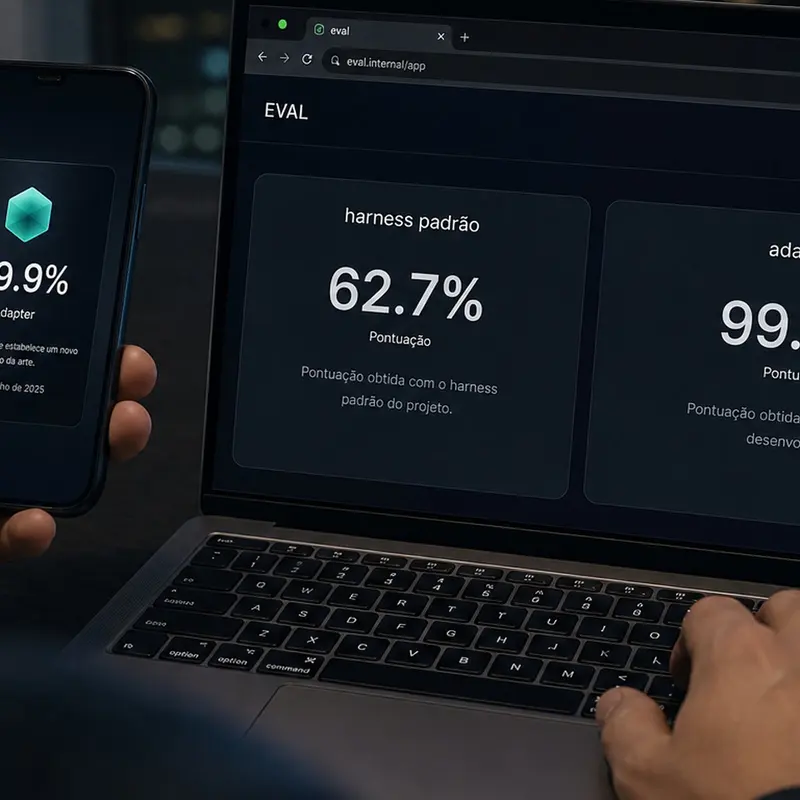
GPT-6 Astra chegou. O 99,9% só conta se você souber o harness
Toda vez que um modelo novo chega, o feed entrega um card com três porcentagens. Desta vez: GPT-6 Astra. 98%. 99,9%. 100%. A tentação é copiar e colar. Eu abri as páginas.
Grok Bot na prática: o truque não é o chat, é a rotina
Passar uma tarefa pontual pra um agente é fácil. O difícil é fazer o mesmo trabalho toda semana, a partir de uma fonte que você controla, sem o agente inventar duração, nível ou link no caminho.
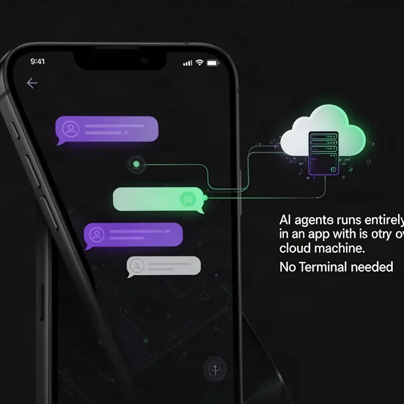
A camada operacional da sua empresa não precisa mais de um programador
Enquanto Claude Code e Codex vivem no terminal, uma nova categoria de agente de IA roda direto no app do celular, com computador próprio na nuvem — pensada pra quem nunca abriu um terminal na vida. A diferença não é só de interface: é uma mudança de quem consegue montar um time de agentes sozinho.
O funil de vendas parou de descrever como as pessoas realmente compram
O triângulo invertido presumia um consumidor que segue etapas em ordem. Esse consumidor não existe mais. Pesquisa recente aponta um modelo não-linear — múltiplos pontos de contato ao redor de um centro, sem hierarquia fixa — e a IA generativa é o exemplo mais radical de por que presença importa mais que sequência.
Por que servidores MCP ficaram mais fáceis de escalar do dia pra noite
MCP acabou de deixar de ser stateful. A mudança parece um detalhe de changelog, mas remove o maior atrito de quem hospeda um servidor em produção: deploy serverless e escala horizontal deixam de exigir uma camada de sessão dedicada. Como o novo modelo de descoberta e os cabeçalhos explícitos resolvem isso na prática.
Você mandou às 14h03. São 14h08. Isso não é o problema que você acha que é
85% dos líderes dizem que o híbrido dificultou saber se o time está produtivo — mesmo com os funcionários relatando o contrário. A saída não é mais vigilância digital. É separar disponibilidade de produtividade com um SLA de comunicação real, não uma expectativa invisível de resposta instantânea.
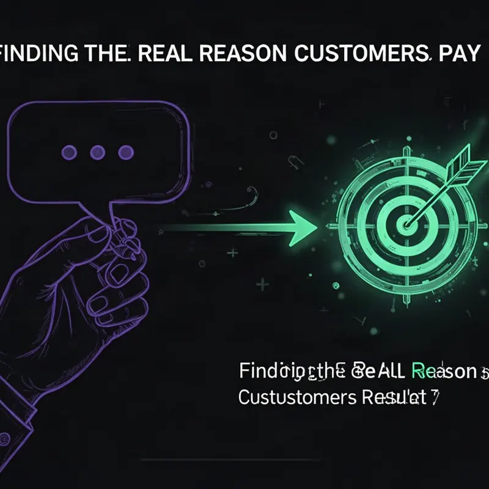
O teste de 10 segundos que mostra por que seu produto não vende
Complete a frase: 'o cliente me paga porque com isso ele ___'. Se a resposta for 'se organiza' ou 'fica mais produtivo', você achou o sintoma, não a dor. Seis princípios sobre por que produtos não vendem, como conseguir o primeiro cliente B2B, o problema do ovo-e-galinha em marketplaces, e por que recorrência é o que sustenta tudo.
Seu agente aprovou o reembolso duas vezes — e a culpa não é do prompt
LLMs são probabilísticos e por isso deixam passar erros que nenhuma regra explícita permitiria. A solução esquecida nos anos 80 está voltando: casar redes neurais com ontologias formais pra dar guardrails de verdade aos agentes.
Você fecha o notebook, sai pra almoçar, e volta com um pull request pronto
Agentes de codificação não são mais uma coisa só. Existe local (terminal, você acompanha em tempo real) e cloud (roda numa VM isolada, faz deploy, devolve PR sozinho). O framework pra decidir quando usar cada um — e quando nenhum agente deveria tocar o código sem supervisão.
9 Agentic Design Patterns — do prompt chaining ao multi-agent, com tabela de decisão
Os 9 agentic design patterns que importam, dos workflow patterns (chaining, routing, parallelization, orchestrator-workers) aos agent patterns (reflection, tool use, ReAct, planning). Com tabela de decisão, case study real de code review e os frameworks que implementam cada um.
AI Coding Workflow 101 — o loop de 6 estágios que separa dev que reclama de IA de dev que entrega 3x mais
O loop de 6 estágios que faz AI coding funcionar em projeto real — context, plan, code, review, test, iterate. Com stack de ferramentas 2026, AGENTS.md, anti-patterns e o que aprendi construindo o Dev Team Kit.
Context Engineering 101 — a arte que separa prompt engineer de top 1% dos usuários de LLM
O que separa um prompt engineer comum do top 1% dos usuários de LLM: context engineering. Anatomia do contexto, context rot, loading upfront vs just-in-time, compaction, sub-agents e armadilhas de produção.
Como projetar seu primeiro AI Agent — o framework de 10 passos de manual a fleet autônoma
Construir um AI agent é dar ao modelo tanto o cérebro quanto as mãos. Um framework de 10 passos que sai do trabalho manual até uma fleet de agents autônomos, com MCP tools, skills, SOPs, AGENTS.md, patterns multi-agent e human-in-the-loop.
O que torna um AI Agent diferente do ChatGPT — abrindo a tampa do loop ReAct
O que mecanicamente separa um AI agent de um chatbot: o framework PEAS, autonomy/proactiveness/action, o loop ReAct, Plan-and-Execute, context window como RAM e tools. Com a stack pra construir agents em produção e os erros que sempre quebram.
Como MCP funciona — o USB-C dos LLMs que finalmente desbloqueia agents em produção
MCP é o protocolo único que resolve o problema N×M de integrar AI com fontes de dados — arquitetura 3-layer, os 3 primitives, código de exemplo e patterns de produção. O guia completo de por que aprender MCP virou não-negociável em 2026.
Como RAG funciona — o padrão arquitetural que faz LLMs deixarem de alucinar
Todo LLM tem conhecimento congelado no tempo e alucina com confiança quando não sabe. RAG resolve isso puxando contexto relevante na hora da pergunta — destrincho embeddings, chunking, hybrid search, rerank, agentic RAG e a stack pra começar em produção.
LLM Concepts Deep Dive — os 15 conceitos que separam quem usa IA de brinquedo de quem usa em produção
Os 15 conceitos de LLM que importam de verdade em produção: tokens, embeddings, latent space, pretraining, RLHF, temperature, hallucinations e prompt injection. Com papers de referência, ferramentas e as armadilhas que ninguém te avisa.
LLM Evals Explicado — os 15 conceitos que separam ship-and-pray de engenharia séria com LLMs
Os 15 conceitos de LLM evaluation que separam ship-and-pray de engenharia séria — não-determinismo, golden set, rubrics, LLM-as-judge, métricas RAG e agent. Mais o framework de 5 passos pra ter eval rodando em CI até semana que vem.
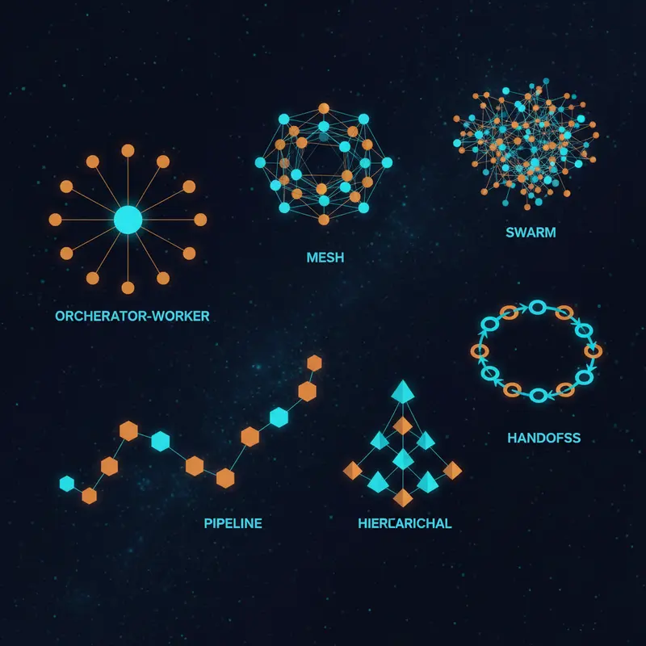
Multi-Agent Architectures — as 6 topologias, quando usar cada uma, e por que não usar nenhuma
As 6 topologias de multi-agent systems — orchestrator-worker, pipeline, hierarchical, swarm, mesh e handoffs — explicadas com casos reais. Quando NÃO usar multi-agent, os failure modes que sempre aparecem em produção, e a stack certa por arquitetura.
Reinforcement Learning explicado simples — de cervos na floresta ao DeepSeek-R1
RL sem PhD: agent, environment, state, action e reward explicados com intuição. Da AlphaGo ao DeepSeek-R1, passando por RLHF, DPO, GRPO, RLVR e reward hacking — o que treina o LLM que você usa todo dia.
Vector Databases — quando pgvector basta, quando você precisa de Pinecone, e o framework de decisão
Por que bancos tradicionais quebram com embeddings, como HNSW e quantization resolvem o problema O(n), e o framework pra decidir entre pgvector, Qdrant, Pinecone, Weaviate e Milvus em 2026.
AI Agents: Memória, Estado e Consistência (o que ninguém te conta sobre rodar em produção)
A parte difícil de construir um agente de IA não é chamar o modelo — é mantê-lo coerente ao longo de horas ou dias. State, memory e consistency rules: o que cada peça faz, onde quebra em produção, e como ferramentas reais como LangGraph e Mem0 resolvem isso.
ML System Design 101 — Os 10 conceitos que você precisa dominar antes de qualquer entrevista
Os 10 conceitos fundamentais de ML system design que você precisa dominar antes de qualquer entrevista — features, embeddings, loss functions, data leakage. Com exemplos reais, ferramentas que importam e um framework de 5 passos.
Construindo seu próprio AI Chat Assistant — quando off-the-shelf vira teto baixo
Quando off-the-shelf vira teto baixo, times sérios constroem o próprio chat assistant. Um guia prático de tokenization, scaling laws, model routing, context engineering, evals e a stack pra começar amanhã.
Top 1% no Claude Code: o que o playbook não ensina (e a gente provou medindo)
A diferença entre amador e top 1% no Claude Code não é prompting — é design de sistemas. Os 6 padrões que separam os dois grupos, o que quase ninguém cobre, e um bench público de 53 cenários (pass rate 92.6%).
Harness Engineering: como transformar Spec-Driven em agentes confiáveis para construir apps inteiros
A próxima fase do desenvolvimento com agentes de IA exige mais do que gerar funcionalidades isoladas a partir de uma spec. Quando o objetivo é entregar sistemas inteiros com qualidade consistente, surgem falhas previsíveis: o agente começa demais, para cedo demais, perde contexto entre sessões,…
DSPy na prática: programação declarativa com LLMs
O DSPy transforma a forma como lidamos com prompts ao permitir a definição de assinaturas em Python para otimização automática de LLMs. Isso resulta em processos mais estruturados, modulares e reprodutíveis para extrações e outras tarefas com texto.
Quando programar vira prompt: o fim da era do código
A programação evoluiu com a IA, transformando-se de escrita manual de código para um processo de orquestração de prompts. Isso levanta questões sobre criatividade, cultura e a futura identidade dos desenvolvedores no mercado.
Como o Cursor transformou meu fluxo de desenvolvimento
O Cursor uniu editor, agentes e automações: planos rastreáveis (.cursor/plans/), Rules & Skills, cloud agents em cursor.com/agents, Debug Mode e comandos (/pr, /fix-issue) que economizam tempo e trazem consistência.
A Revolução Silenciosa: Como a Anthropic e a Bun Estão Transformando o Desenvolvimento de Software com IA
Em 2025, a Anthropic consolidou sua estratégia de dominar a infraestrutura de desenvolvimento de software ao adquirir a Bun, uma startup com tecnologia revolucionária em runtime JavaScript e IA. Essa combinação fortalece o Claude Code, ferramenta com receita bilionária, e posiciona a Anthropic na…
Como Usar Windsurf e Lovable para Criar Landing Pages que Convertem 100% GRÁTIS
Quero mostrar um fluxo prático e reproduzível para criar uma landing page de captura de leads que funcione de verdade, totalmente sem custo com ferramentas modernas: Windsurf (IDE), Lovable (gerador + backend opcional), Supabase (banco) e LLMs gratuitos. A ideia é que você saia daqui com um produto…
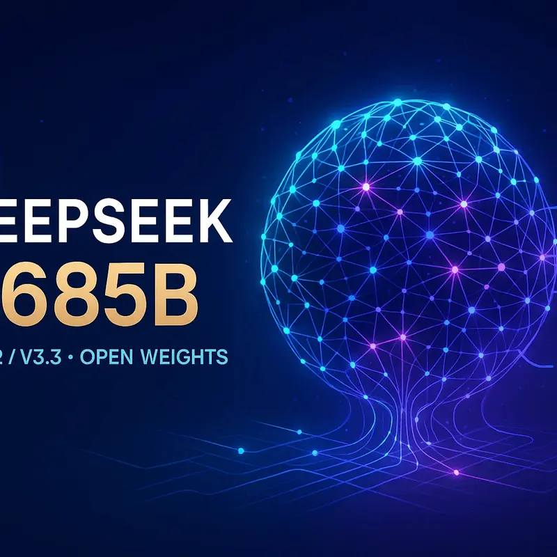
DeepSeek acaba de lançar novo modelo!
Sumário 🚀 O que é o DeepSeek V3.2 e V3.3? 🧭 Por que “foco em raciocínio” e “desenvolvidos para agentes” faz diferença? 🧮 Benchmarks: por que todo mundo está falando de matemática? 🖥️ O peso real: parâmetros, infraestrutura e quem vai rodar isso 🛠️ Testando na prática: a tentativa de rodar o…
Por Trás dos Bastidores da IA: Minha Jornada Entre Cursor, Claude e o Impacto Surpreendente do Gemini CLI
O post explora a jornada de um desenvolvedor na criação do UserJot, destacando a competição acirrada entre ferramentas de IA como Cursor, Claude Code e Gemini CLI. O autor analisa as mudanças nos preços e planos, refletindo sobre como essas inovações afetam a produtividade e as escolhas dos…
Por Trás das Cortinas da IA: Bastidores, Conexões Inusitadas e Surpresas do Ecossistema em 2025
O universo da IA em 2025 está mais dinâmico e colaborativo do que nunca – modelos inovadores, ferramentas abertas e debates sobre eficiência e segurança definem o cenário. Prepare-se para múltiplas oportunidades e desafios criativos, onde dominar o contexto faz toda a diferença.
SEU AGENTE DE IA VAI SER HACKEADO: como 250 documentos podem hackear uma LLM
Sumário 😱 O choque inicial 🧠 O que é envenenamento e por que me preocupa 🔬 O experimento que mudou o panorama 📊 Configuração dos testes 📌 Resultado-chave: tamanho não protege 📣 A lição da raridade dos dados ⚠️ Exemplos de uso malicioso 🛠️ Entendendo o ataque DOS em LLMs 🔎 Por que isso funciona: […]
TOON vs JSON: Uma Reviravolta no Jogo dos Dados Estruturados para IA
O TOON pode não ser a solução universal, mas entrega eficiência de tokens, legibilidade e velocidade para quem lida com IA. Fique de olho: o futuro dos formatos de dados pode não ser tão previsível assim.
Por Que Eu Troquei o Next.js pelo TanStack Start (E Não Quero Voltar)
O autor migrou do Next.js para o TanStack Start em busca de simplicidade e controle no desenvolvimento React, destacando as frustrações com a complexidade do Next.js e os benefícios do TanStack Start.
Minha Experiência Selvagem com o Cursor 2.0: Quando Multi-Agents Encontram Voz, Segurança e Velocidade
Cursor 2.0 não é só mais uma atualização: é uma virada de chave em colaboração, segurança e velocidade, pensada tanto para devs solitários quanto para equipes que jogam pesado. Se Multi-Agent e comandos de voz te parecem coisa do futuro… agora é só rotina.
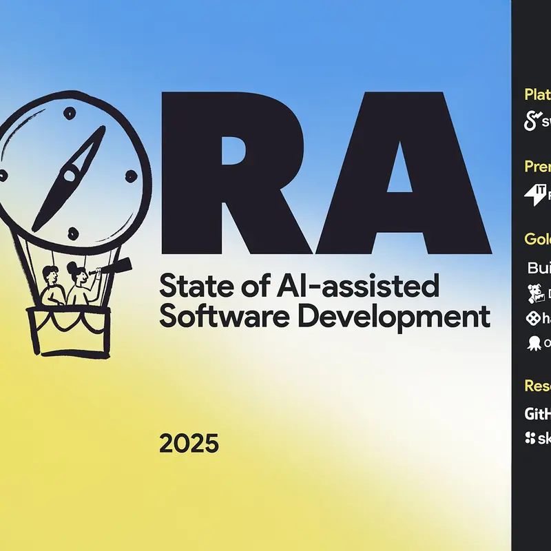
DORA 2025: Minhas Surpresas, Dilemas e Insight sobre o Estado da IA no Desenvolvimento de Software
O DORA 2025 deixou claro: IA é catalisador — amplifica forças (e falhas), exigindo que equipes invistam não só em ferramentas, mas principalmente em processos, plataformas e cultura.
Por Dentro da Revolução Windsurf SWE-1.5: Quando Velocidade e Inteligência se Encontram no Desenvolvimento de Software
O SWE-1.5 é a fusão de rapidez e inteligência em IA para engenharia de software: supera concorrentes nos benchmarks, destrava inovações no fluxo de trabalho e inaugura uma nova era para desenvolvedores que querem mais eficiência sem abrir mão da qualidade.
OpenAI DevDay 2025: como eu vejo o futuro do desenvolvimento
Eu abro este texto com a mesma energia com que subi ao palco em San Francisco: empolgado, prático e com a certeza de que estamos apenas no começo. Neste keynote que apresentei pela OpenAI, compartilhei anúncios, demos ao vivo e uma visão clara do que será mais fácil para vocês construírem com IA.…
Por que eu não gosto de Scrum (e o que uso no lugar)
Eu sou o Felipe Vieira e neste texto eu quero explicar, de forma franca e prática, por que o Scrum deixou de funcionar para mim, o que eu observo como causas principais desses problemas e quais caminhos eu tenho adotado como alternativa. Vou mencionar experiências reais atendendo mais de 50…
Por Que O Último Programador Esqueceu o Teclado: Caminhos Surpreendentes do Futuro da Programação
Nem todo mundo vai ser substituído por máquinas — mas quem não se reinventa, corre sim o risco de virar história. O segredo está em aprender novas habilidades, surfar a onda da inteligência artificial e pensar além das linhas de código. O programador do futuro não digita, direciona.
5 Estratégias para Desenvolvedores em 2025: IA, Fundamentos, Soft Skills, Buildar em Público e T-Shaped
## 5 Estratégias essenciais para potencializar sua carreira de desenvolvedor em 2025 O avanço tecnológico avassalador está remodelando o cenário do desenvolvimento de software. Em 2025, a mescla entre especialização técnica e habilidades interpessoais será crucial para desenvolvedores que desejam…
Guia Completo para Entrevistas de Design de Sistemas: Da Teoria à Prática Avançada
Guia Definitivo para Entrevistas de Design de Sistemas: Dos Fundamentos à Arquitetura Avançada As entrevistas de design de sistemas tornaram-se fundamentais no processo de contratação técnica em grandes empresas de tecnologia. Essas avaliações são essenciais para medir a capacidade de um candidato…
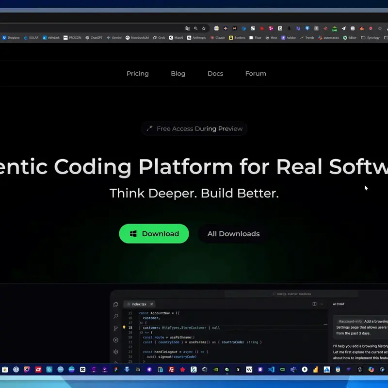
Troquei o Cursor! Qoder NOVA IDE de IA do Alibaba — vibecoding cursor bolt lovable replit ai
Eu sou o Felipe DEV e, se você viu o meu conteúdo, sabe que eu sempre testo ferramentas de IA para desenvolvimento. Neste artigo eu vou explicar por que eu decidi trocar o Cursor, como conheci o Qoder (a nova IDE de IA do Alibaba) e qual foi o meu plano de migração de ferramentas. […]
Quebrando o Ciclo do Desenvolvedor Pleno: Estrategias para Evolução na Carreira em 2025
No dinâmico universo da tecnologia, 2025 representa um ano crucial para desenvolvedores que buscam ultrapassar o estágio intermediário e alcançar o nível sênior. A trajetória de muitos desenvolvedores de nível pleno frequentemente estagna devido a um ciclo de aprendizado sem aplicação prática. Este…
Engenharia de Contexto: Explorando o Futuro d Vibe CODING
Quando comecei a pensar sobre a engenharia de contexto, um termo que inventamos recentemente, percebi que o que estamos construindo aqui é algo verdadeiramente revolucionário. Mais do que uma simples técnica ou conjunto de truques, a Engenharia de Contexto é um campo emergente que busca transformar…
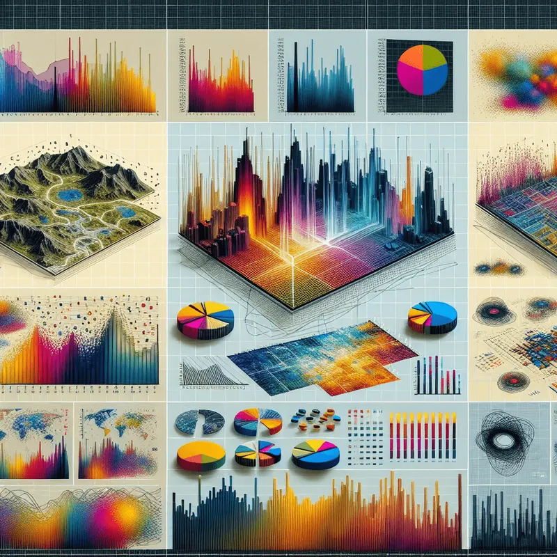
5 Técnicas Modernas de Visualização com Heatmaps em Pesquisa Científica
## 5 Técnicas Modernas de Visualização com Heatmaps em Pesquisa Científica Heatmaps são representações bidimensionais que utilizam cores para traduzir dados complexos em insights imediatos. Eles são mais do que uma mera representação gráfica; constituem uma ferramenta estratégica para análise de…
A Revolução Ágil: Por que Precisamos Retornar aos Princípios Originais
## A Revolução Ágil: Recuperando a Autonomia do Desenvolvimento No início dos anos 2000, a comunicação entre áreas técnicas e negócios era praticamente inexistente. Desenvolvedores enfrentavam processos rígidos e burocráticos, refletidos na metodologia cascata, onde todas as fases do projeto eram…
MAXMODE GRÁTIS no Cursor: O que mudaram e até onde dá pra usar sem pagar a mais? | vibecoding cursor bolt lovable replit ai
Se você é desenvolvedor front-end ou trabalha com programação há algum tempo, provavelmente já ouviu falar do Cursor — uma ferramenta que vem ganhando destaque no universo do desenvolvimento assistido por IA. Sou Felipe DEV, com mais de seis anos de experiência na área, e hoje vou compartilhar com…
OpenAI vs Gemini vs Claude: Qual IA cria o MELHOR MVP para SaaS? Teste REAL no LOVABLE com Vibecoding, Cursor, Bolt e Replit AI
Olá, pessoal! Aqui é o Felipe Vieira, designer e desenvolvedor senior com mais de 16 anos de experiência, e hoje vamos mergulhar fundo em uma análise comparativa que muitos me pediram: qual das maiores inteligências artificiais — OpenAI, Google Gemini ou Anthropic Claude — é a melhor para criar um…
Vibecoding Cursor Bolt Lovable Replit AI: Explorando o Processo Criativo com Ryo Lu, Head de Design da Cursor
Quando penso em vibecoding cursor bolt lovable replit ai, a primeira pessoa que me vem à mente é Ryo Lu, o Head de Design da Cursor. Ele é um verdadeiro pioneiro, sempre experimentando e inovando com projetos como ReOS e Proto Land. Neste artigo, vou compartilhar um mergulho profundo no processo…
Aumentos Surreais do Cursor: Por Que Estou Pensando em Abandonar Meu Editor de Código Preferido
Se você achava que só streaming tinha aumento surreal, é porque não conheceu o Cursor em 2025. Preços subiram até 10x, deixando até fã antigo com vontade de migrar. E você, trocaria de IDE também?
Como Construir Websites Realmente Bonitos Usando Vibecoding Cursor Bolt Lovable Replit AI
Se você já tentou criar um website usando ferramentas de inteligência artificial como Cursor AI, Claude ou ChatGPT, provavelmente já percebeu um problema comum: os designs gerados automaticamente parecem genéricos, pouco inspiradores e longe de serem profissionais. Mas a verdade é que o problema…
“jQuery: O Último Suspiro de um Antigo Gigante da Web”
Houve um tempo em que jQuery dominava o desenvolvimento web. Com uma simples chamada como $(selector), ele transformava o caos do JavaScript puro em uma sinfonia de interações elegantes e responsivas. jQuery não era apenas uma biblioteca; era um companheiro confiável que acompanhava desenvolvedores…
OpenAI Alerta para Risco Aumentado de Armas Biológicas com Modelos de Próxima Geração
A OpenAI chamou atenção para o aumento dos riscos associados aos seus futuros modelos de inteligência artificial, especialmente quanto à possibilidade de uso indevido nas áreas de biotecnologia. Em especial, os modelos sucederão o modelo de raciocínio o3, o qual já apresenta certa preocupação…
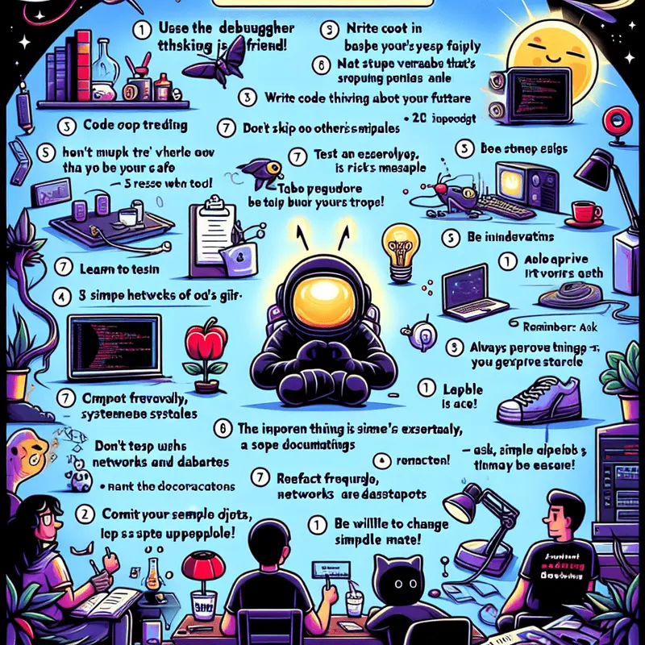
15 Anos de Dicas de Programação em 60 Segundos: Aprenda a Codificar com Maestria!
Imagine que você está prestes a embarcar em uma jornada incrível de 15 anos na programação. Neste artigo, exploraremos conselhos essenciais que vão ajudá-lo a se tornar um mestre da tecnologia. Cada dica foi cuidadosamente elaborada para orientar você no caminho do sucesso, garantindo que você…
“Transforme Reclamação em Solução: A Mentalidade que Faz a Diferença!”
Reclamar é fácil e não custa nada. Resolver, por outro lado, exige esforço, criatividade e tempo. Essa diferença fundamental pode transformar a maneira como lidamos com desafios no dia a dia, tanto pessoal quanto profissionalmente. Ao longo da minha carreira, percebi algo curioso: quem se dispõe a…
LANGFLOW – O Flaw de Segurança Mais Idiota da IA: Uma Análise Profunda
Bem-vindo ao nosso mergulho profundo em um dos erros de segurança mais intrigantes que encontramos no mundo da inteligência artificial. Hoje, vamos explorar como a Langflow, uma plataforma de baixo código para construção de agentes de IA, permitiu que qualquer um executasse código Python arbitrário…
Meta tenta atrair talentos da OpenAI com US$ 100 milhões, mas falha diante da lealdade da equipe
No cenário altamente competitivo da inteligência artificial, a batalha por talentos de ponta não é apenas uma questão de poder financeiro, mas sim uma disputa entre missões e culturas organizacionais que inspiram lealdade e inovação. Recentemente, a Meta Platforms tentou atrair talentos de alto…
“Construindo o Melhor: Uma Abordagem Estratégica Além do Técnico”
Quando falamos em construir o “melhor” software, muitas vezes nos concentramos apenas na técnica. No entanto, o desenvolvimento de software é um processo complexo que envolve muito mais do que apenas escrever linhas de código. Para alcançar o sucesso, é fundamental considerar vários fatores que…
“Desvendando o Mito: Estudar 6 Meses para Ganhar R$10k como Desenvolvedor!”
Por Que os Fundamentos são Mais Importantes no Desenvolvimento de Software Olá, pessoal! Hoje vamos abordar um tema essencial para qualquer desenvolvedor: os fundamentos da computação e do desenvolvimento de software. No mercado, muitos vendem a ideia de que você pode estudar por seis meses e…
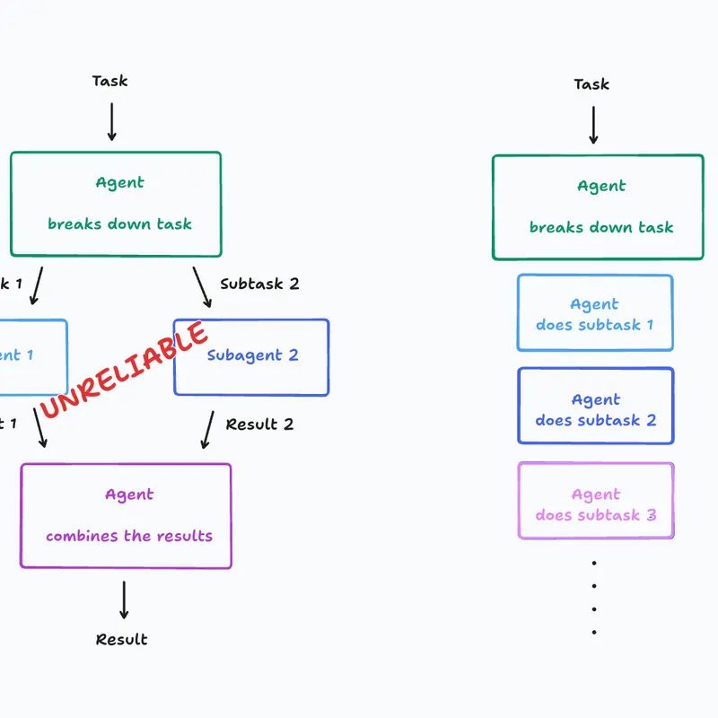
Por Que Construir Multi-Agent LLMs Pode Ser Uma Cilada (E Como Focar no Essencial Para Agentes de IA)
No hype dos Multi-Agent LLMs, menos é mais. O segredo está em engenharia de contexto e princípios básicos, não em botar um exército de agentes pra conversar. Testei, falhou, aprendi, compartilho.
Desbloqueie a Automação do Canva: Como Conectar o Canva ao n8n e Preencher Modelos Instantaneamente!
Olá, amigos! Sou o Local Buzz AI e hoje vou mostrar como conectar o Canva ao n8n, uma ferramenta poderosa que permite automatizar muitos aspectos do seu fluxo de trabalho no Canva. Se você está cansado de preencher manualmente seus modelos de marca no Canva, está no lugar certo! Vou guiá-lo passo a…
“Menos é Mais: O Desafio de um Engenheiro de Software em Perseguir a Assertividade”
Imagine-se no meio de um labirinto, onde cada passo revela um novo desafio e uma nova oportunidade. Essa é a realidade de ser um engenheiro de software. À medida que você desenvolve software e observa diferentes padrões de design, você aprende que cada decisão é um tradeoff – uma escolha entre…
Máquina Darwin-Gödel da Sakana AI Evolui ao Reescrever Seu Código e Aumenta Desempenho em 50%
No mundo da inteligência artificial, a Sakana AI tem se destacado com inovações que desafiam limites, principalmente através da Darwin-Gödel Machine (DGM). Recentemente, a DGM demonstrou a incrível habilidade de reescrever seu próprio código Python, ampliando significativamente sua performance.…
“Rumo ao Salário de +15k: A Maratona do Programador de Sucesso!”
Como Alcançar um Salário de Mais de R$15 Mil no Mercado de Programação Imagine receber um salário superior a R$ 15 mil por mês trabalhando como programador. Esse objetivo pode parecer inalcançável para muitos, mas com visão e persistência, é perfeitamente possível. Profissionais que atingem esse…
“10 Dicas Infalíveis para Turbinar sua Produtividade no Trabalho Remoto!”
Trabalhar remotamente se tornou uma realidade para milhões de pessoas ao redor do mundo. Embora ofereça flexibilidade e comodidade, também apresenta desafios únicos que podem afetar sua produtividade e bem-estar. Para ajudá-lo a navegar por esse cenário, compilamos uma série de dicas eficazes que…
Ferramenta de Vídeo AI do Google Gera Clipes Realistas e Desafia Autenticidade na Indústria Cinematográfica
O mais recente gerador de vídeos por IA do Google, o Veo 3, está causando um grande impacto online com clipes incrivelmente realistas que muitos usuários têm dificuldade em distinguir daqueles criados por cineastas e atores humanos. Esta nova ferramenta, parte da plataforma de cinema Flow AI do…
“Brasil: A Obsessão pelo Enriquecimento Rápido e suas Armadilhas!”
Olá, pessoal! Hoje vamos abordar um tema que está profundamente enraizado na cultura brasileira: a busca incessante por enriquecer rapidamente. Este fenômeno, que parece persistir ao longo dos anos, reflete-se em diversas práticas como a tele-sena, o tigrinho, esquemas de pirâmide e, mais…
Da Frustração ao Hype: Como o Context7 MCP Salvou Minha Codificação com o Cursor (E O Que Aprendi no Processo)
Se você já ficou preso por código errado gerado pelo Cursor, tente o Context7 MCP: ele turbina a memória do AI, atualiza documentações e reduz erros com Next.js. Dica de ouro pra não perder tokens – e tempo.
Minha Jornada com IA Local: Construindo Meu Próprio Segundo Cérebro Digital
Em poucas palavras: construir um segundo cérebro digital com IA local é possível, e pode transformar a forma como você lida com conhecimento e memória. Experimente, personalize e descubra como a tecnologia pode ser sua aliada na luta contra o esquecimento.
Nada É Tão Simples: Bastidores (Às Vezes Caóticos) de Criar um App de IA do Zero
Em resumo: desenvolver apps de IA é um caminho cheio de curvas inesperadas, com mais desafios do que muita gente imagina — mas também com oportunidades pra inovar, aprender e transformar ideias em realidade.
China Lança 12 Satélites Iniciais para Constellação de Computação Espacial com IA
Recentemente, a China deu um passo significativo no campo da tecnologia espacial ao lançar os primeiros 12 satélites de sua ambiciosa Constelação de Computação Três-Corpos, um projeto que visa aproveitar o poder da inteligência artificial (IA) no espaço. Esta iniciativa marca o início de uma frota…
🔥 Como Conseguir 30% OFF nas Minhas Rules de IA | Guia Completo de Assinaturas e Benefícios
Se você está buscando maneiras de aprimorar suas habilidades em automação e inteligência artificial, você está no lugar certo! Neste guia, vamos explorar como você pode adquirir as minhas automações, conhecidas como “Rules”, e aproveitar ao máximo os benefícios que ofereço através das assinaturas.…
“Demissão Inesperada: A Trajetória de Boni e a Falta de Gratidão da TV Globo”
Você já ouviu falar da história de Boni, um dos maiores publicitários da TV brasileira, que foi demitido sem aviso prévio da Rede Globo? Esta narrativa não é apenas um relato de carreira, mas uma lição valiosa sobre a importância da valorização profissional no ambiente de trabalho. O Impacto de…
🚀 **Transforme Sua Carreira: 5 Projetos Práticos que Vão Impactar o Mercado!**
Iniciar projetos práticos é essencial para se destacar no mercado de desenvolvimento. Enquanto exercícios básicos, como Todo List ou Jogo da Memória, são úteis para aprender fundamentos, eles não demonstram o verdadeiro potencial de um desenvolvedor. Para realmente impactar usuários e atrair a…
Lovable 2.0: A Revolução no Desenvolvimento Colaborativo com IA e Recursos Inovadores
A plataforma Lovable 2.0, lançada em abril de 2025, é uma inovação no desenvolvimento de aplicativos e sites, permitindo que desenvolvedores criem projetos prontos para produção apenas através de interações com inteligência artificial. Esta atualização se concentra em colaboração em equipe,…
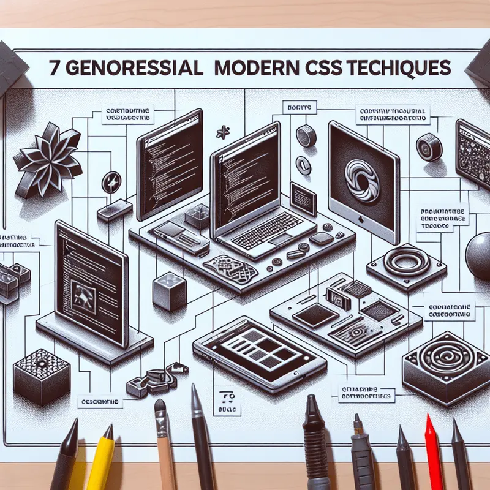
7 Técnicas Essenciais de CSS Moderno para Projetos Web em 2025
### 7 Técnicas Essenciais de CSS para Projetos Modernos (2025) ### 1. **Definir Limites Responsivos com `clamp()`** Aumente a flexibilidade do layout para melhorar a experiência em várias resoluções de tela: “`css body { max-width: clamp(320px, 85vw, 1200px); margin: 0 auto; padding: 20px 0; } “`…
Alternativas Modernas ao jQuery: Navegando de um Legado Para o Futuro do Desenvolvimento Web
Em meados dos anos 2000, o jQuery era a ferramenta indispensável para desenvolvedores web. Com uma sintaxe reduzida e a capacidade de unificar os comportamentos dos navegadores em um só lugar, ele revolucionava como interagíamos com o DOM. No entanto, com o advento de frameworks modernos como…
Príncipe Saudita Lança Empreendimento de IA Enquanto Trump, Musk e Zuckerberg Participam de Conferência
Em um desenvolvimento significativo para o cenário global de inteligência artificial, o Príncipe Saudita Alwaleed bin Talal lançou um novo empreendimento em inteligência artificial (IA), coincidindo com a chegada de figuras proeminentes, incluindo o Presidente dos EUA, Donald Trump, Elon Musk, Sam…
“Reuniões: O Vício que Engole sua Produtividade!”
Você já se sentiu preso em reuniões que pareciam nunca terminar? Reuniões que, em vez de resolver problemas, apenas criam mais tarefas para você lidar? Este cenário é mais comum do que imaginamos e pode estar afetando seriamente a produtividade da sua equipe. Neste artigo, vamos explorar por que as…
“Arrisque-se a Viver: A Lição de Jim Carrey sobre Seguir sua Paixão”
Na jornada da vida, as escolhas que fazemos moldam nosso destino de maneiras muitas vezes imprevisíveis. Uma das lições mais poderosas sobre risco e recompensa vem da história inspiradora de Jim Carrey, um renomado comediante que entendeu profundamente o valor de seguir suas paixões mesmo diante…
Cursor 2025: Inovação e Produtividade na Programação com IA e Recursos Revolucionários
## Nova Era da Programação: Revelando o FutureME 2030 O **FutureME 2030** é a mais recente aposta no mundo da programação assistida por inteligência artificial, trazendo uma revolução na forma como desenvolvedores criam e interagem com o código. Lançado oficialmente em setembro de 2030, este editor…
Cursor: O Editor de Código AI Que Revoluciona a Produtividade dos Desenvolvedores em 2023
A Revolução da Automação Doméstica com o Google Nest No mundo atual, onde a tecnologia avança rapidamente, a automação tornou-se uma parte indispensável de nossas vidas cotidianas. Um dos produtos que está na vanguarda dessa revolução é o Google Nest. Este sistema inovador de automação doméstica…
“Lovable 2.0: Criação de Apps Revolucionada com IA, Colaboração Eficiente e Segurança Aprimorada”
Estamos vivendo uma era de inovações tecnológicas sem precedentes, e a criação de aplicativos tornou-se mais intuitiva do que nunca. Hoje, vamos explorar como a plataforma Lovable 2.0 está revolucionando a criação de apps com seu sistema de inteligência artificial, colaboração aprimorada e foco…
Novidades da Supabase: Atualizações e Melhores Funcionalidades para 2024 e 2025
No vasto oceano digital atual, manter-se à frente nas tendências tecnológicas é essencial para desenvolvedores e empresas. Uma plataforma que tem continuamente surpreendido o mercado é a Supabase. Nos anos de 2024 e 2025, a Supabase trouxe atualizações que solidificaram sua posição como uma das…
Supabase: Novas Funcionalidades e Melhorias para um Backend Eficiente e Seguro em Abril de 2025
Em abril de 2025, a Supabase, uma plataforma open-source que fornece backend como serviço, anunciou uma série de atualizações que prometem transformar a experiência do usuário. Essas inovações abrangem desde melhorias na criação e implementação de funções Edge até a eliminação de serviços…
Curl combate relatórios de vulnerabilidade gerados por IA que sobrecarregam seus mantenedores
No mundo dos projetos de código aberto, a segurança e a confiabilidade são de suma importância. O curl, uma ferramenta de linha de comando e biblioteca para transferência de dados com URLs, tem enfrentado desafios únicos com o crescimento de relatórios de bugs gerados por IA, muitas vezes chamados…
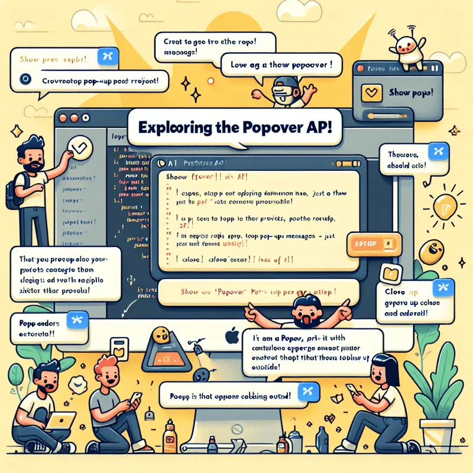
“Descubra a Nova API Popover: A Revolução nas Janelas Modais do HTML e JavaScript!”
Se você está sempre em busca de maneiras de aprimorar seu desenvolvimento web, a Popover API é uma ferramenta que você precisa conhecer. Recentemente adicionada ao padrão HTML e JavaScript, essa API está facilitando a criação de interfaces dinâmicas e interativas com muito mais facilidade. Neste…
“Desmistificando a Tecnologia: O Peso Real por Trás da Paixão”
Olá, pessoal! Hoje vamos explorar um tema que está cada vez mais presente nas conversas sobre o futuro: Desafios e Oportunidades na Tecnologia em 2025. Com mais de 15 anos de experiência na área, posso afirmar que o setor de tecnologia é um dos mais dinâmicos e exigentes para se trabalhar. Vamos…
Experimento Não Autorizado com IA no Reddit Levanta Questões Éticas sobre Consentimento dos Usuários
Um estudo recente realizado por pesquisadores da Universidade de Zurique gerou um intenso debate sobre a ética na implementação de IA, especialmente em relação ao consentimento dos usuários. O experimento envolveu o uso de postagens geradas por IA na comunidade r/changemyview do Reddit, o que levou…
Atualizações do Cursor AI: Melhorias que Transformam a Edição de Código e Aumentam a Produtividade
O Cursor AI está em constante evolução para proporcionar aos desenvolvedores uma experiência de codificação otimizada, suave e avançada. Com sua última atualização na versão 0.49.x, diversas melhorias foram integradas para potenciar ainda mais a ferramenta. Conheça os destaques das novas…
CRIE APPS QUE VENDEM em 15 MINUTOS usando IA (sem código) | Método completo para MVPs
Se você está buscando maneiras de inovar e desenvolver produtos que realmente agreguem valor ao mercado, você está no lugar certo! Neste artigo, vamos explorar como utilizar a inteligência artificial e plataformas de low code para criar aplicativos incríveis em apenas 15 minutos. Sou Felipe DEV,…
Lovable 2.0: Desvendando uma Nova Era de Desenvolvimento Colaborativo e Inteligente para Web
A era digital exige que plataformas de desenvolvimento acompanhem a rápida evolução tecnológica e as necessidades dos desenvolvedores. O Lovable 2.0, lançado em abril de 2025, surge como um marco revolucionário nesse cenário, oferecendo novas funcionalidades que visam aprimorar a experiência do…
“Nostr: A Revolução das Redes Sociais Descentralizadas que Garantem Liberdade de Expressão”
Olá, pessoal! Hoje vamos explorar uma tecnologia inovadora que está transformando a maneira como nos conectamos online: o Nostr. Imagine uma rede social sem um único site ou aplicativo centralizado, mas sim composta por uma rede de relays distribuídos que permitem o compartilhamento de informações…
Novidades do Cursor: Editor de Código AI traz melhorias em produtividade e automação para desenvolvedores
O Cursor, um editor de código de ponta movido por inteligência artificial, continua a redefinir a forma como os desenvolvedores interagem com o código. Com a versão mais recente, lançada em 15 de abril de 2025, o Cursor traz uma enxurrada de atualizações pensadas para turbinar a produtividade e a…
Novidades do Supabase em Outubro de 2024: Recursos, Melhorias e Segurança Avançada para Usuários
Supabase continua a surpreender com novas atualizações, avanços inovadores e aprimoramentos que facilitam o desenvolvimento e a gestão de projetos. Com uma série de melhorias voltadas para segurança, autenticação e experiência do usuário, este artigo destaca as últimas novidades que podem…
Novidades no Supabase: Segurança, Desempenho e Integração para Potencializar Seus Projetos em 2025
Nos últimos anos, o Supabase se consolidou como uma poderosa plataforma de backend como serviço (BaaS), oferecendo recursos robustos que rivalizam e em alguns casos superam suas concorrentes, como o Firebase. Com a evolução contínua em 2025, Supabase implementou uma série de atualizações inovadoras…
Tendências de SEO para 2025: Potencializando sua Presença Online com IA e Busca por Voz
Com o avanço constante do mundo digital, as estratégias para nutrir e expandir uma presença online de sucesso em 2025 exigem conhecimento profundo e flexibilidade para acompanhar as mudanças. Este guia apresenta as principais tendências de SEO para 2025, focando na integração de inteligência…
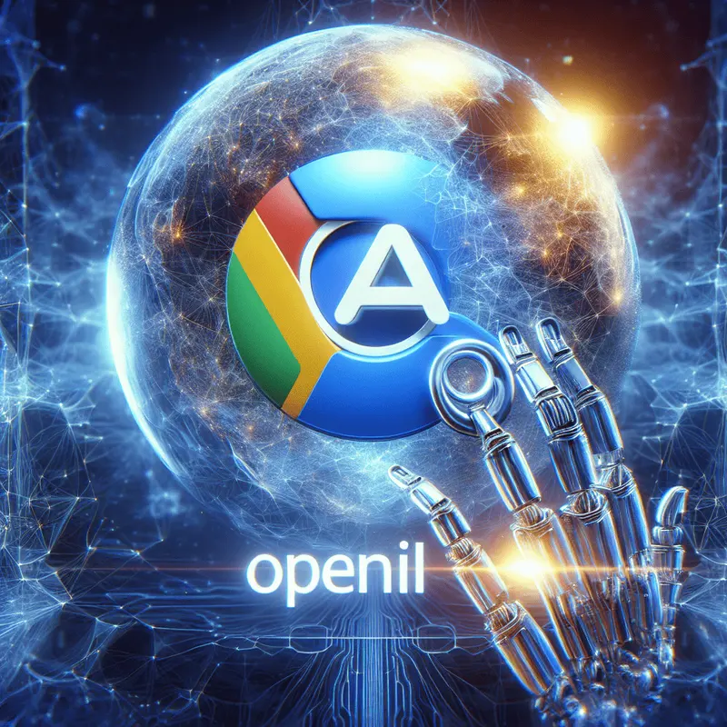
OpenAI Quer Adquirir Chrome e Revolucionar Navegação com Experiência Centrada em Inteligência Artificial
Em uma movimentação recente no caso antitruste em andamento contra o Google, a OpenAI manifestou interesse em adquirir o navegador Chrome, caso a Alphabet seja forçada a vender o produto. Essa ação pode impactar significativamente o cenário tecnológico, especialmente no campo da integração de…
“Descubra o Momento Ideal para Contratar uma Assessoria de Carreira e Transforme Sua Trajetória Profissional!”
Contratar uma assessoria de carreira é uma decisão estratégica que pode impulsionar significativamente a sua trajetória profissional. Seja em momentos de transição, desafios no mercado de trabalho ou na busca por avanços, um consultor de carreira oferece ferramentas e orientações personalizadas…
Cursor: Editor de Código com IA Agora Tem Abas de Chat, Modos Customizados e Indexação Acelerada
O Cursor, um inovador editor de código integrado com inteligência artificial, recentemente incrementou suas funcionalidades, permitindo que desenvolvedores melhorem drasticamente seu fluxo de trabalho. Desde a introdução de abas de chat até a customização detalhada dos modos de trabalho, o Cursor…
Novidades do Supabase: Integração de IA, Nova UI e Funcionalidades Aprimoradas para Desenvolvedores!
Descubra as Últimas Novidades do Supabase: Transformando o Desenvolvimento Open Source No mundo em constante evolução do desenvolvimento de software, manter-se atualizado com as últimas inovações é crucial para se manter competitivo. O Supabase continua a ser uma alternativa robusta ao Firebase,…
Novidades Lovable 2025: Controle, Flexibilidade e Estabilidade para Desenvolvimento Ágil de Produtos Digitais
Desbrave os passos à frente no mundo da inovação tecnológica com a Lovable em 2025. Projetada para otimizar o desenvolvimento de produtos digitais, a Lovable torna o processo mais dinâmico, seguro e, principalmente, colaborativo. As atualizações de março marcam uma era de eficiência para…
10 anos de conselhos sobre programação: princípios essenciais para desenvolvedores
## 10 anos de conselhos sobre programação em 60 segundos: princípios essenciais ### **Domine o Debugger** O debugger é sua maior aliada para identificar erros não óbvios. Exemplo: “`python def calcular_saldo(saldo_inicial, transacoes): total = saldo_inicial for transacao in transacoes: total -=…
5 Pilares Essenciais para Compreender o Verdadeiro Papel de um Gerente de Software
## 5 Pilares para Entender o Que um Gerente de Software de Verdade Deve Ser ### **1. Domínio Técnico que Inspira a Equipe** Gerentes de software competentes combinam habilidades técnicas com visão estratégica. Isso não significa programar, mas entender profundamente os desafios da equipe, como…
Novidades Lovable: História 2.0, Dev Mode, Livestream com Clerk e Mais Para Desenvolvimento Ágil
A plataforma Lovable continua a evoluir, oferecendo ferramentas inovadoras que aprimoram a experiência de desenvolvimento de aplicações web. Recentemente, a Lovable lançou atualizações que incluem funcionalidades avançadas de versionamento, um modo completo de desenvolvimento no navegador e uma…
“Transforme Seu LinkedIn em 5 Minutos: Dicas Rápidas para Brilhar no Mercado!”
Para de Enrolação: Melhore seu Perfil do LinkedIn em 5 Minutos Você já parou para pensar quantas oportunidades podem estar passando despercebidas por causa de um perfil do LinkedIn pouco atraente? Em um mundo cada vez mais digital, ter um perfil otimizado no LinkedIn é essencial para se destacar no…
Supabase 2025: Novidades Inovadoras e Melhores Práticas para Desenvolvedores Modernos
Explorando o Universo de Oportunidades com Supabase em 2025 Em 2025, o Supabase se destaca na vanguarda das soluções open source, moldando-se como a alternativa definitiva ao Firebase, graças à sua plataforma expansiva e rica em funcionalidades que aprimoram a experiência de desenvolvedores…
Cursor: O Editor de Código AI de 2025 que Revoluciona Produtividade e Colaboração dos Desenvolvedores
Em um mundo cada vez mais dinâmico, os desenvolvedores de software buscam ferramentas que não apenas aumentem a produtividade, mas também ofereçam flexibilidade e integrações inteligentes. Neste contexto, surge o OmniEdit, o editor de código alimentado por inteligência artificial que promete…
Novidades na Lovable: Histórico 2.0, Modo Dev e Estabilidade Aprimorada para Desenvolvedores
**Lovable: Descubra as Últimas Inovações e Transforme seu Trabalho** A Lovable se destacou em março de 2025 com importantes atualizações que aprimoram a experiência dos desenvolvedores e das equipes de produto. Vamos explorar as principais novidades e como elas podem gerar valor para você e sua…
Novas Funcionalidades e Atualizações do Lovable: Aperfeiçoando o Desenvolvimento de Aplicações Web
— O Lovable continua a evoluir como uma poderosa plataforma para desenvolvimento de aplicações web, apresentando atualizações que otimizam a experiência do usuário e ampliam suas capacidades. Acompanhe conosco as funcionalidades mais recentes e como elas podem transformar o seu fluxo de trabalho!…
Novidades do Supabase: Integração com IA, Melhorias no Studio e Funcionalidades Realtime em 2025
“`html Supabase, a plataforma de backend-as-a-service open-source, continua a se destacar no mundo da tecnologia com suas inovações e atualizações significativas. No cenário de 2025, os desenvolvedores encontram no Supabase diversas melhorias que tornam o seu uso essencial. Vamos conferir algumas…
Supabase Lança Novos Recursos: Integração de IA, Biblioteca de UI e Melhorias no Supabase Studio
A Supabase tem se destacado como uma poderosa plataforma de desenvolvimento, especialmente para aqueles que buscam alternativas open-source ao Firebase. Com a mais recente atualização de março/abril de 2025, novos recursos e melhorias foram introduzidos, elevando o padrão das ferramentas…
“Desenvolvedores, Vamos Reconhecer Nossos Privilégios e Agradecer pelo Paraíso da Programação!”
No universo da programação, é comum ouvir reclamações sobre prazos apertados, códigos que simplesmente não cooperam e a constante necessidade de aprender novas tecnologias. Esses desafios são reais e fazem parte do dia a dia de qualquer desenvolvedor. Contudo, transformar a carreira em um…
Tudo Sobre Agentic RAG: Com Langflow e Pinecone
Neste artigo, vamos explorar o fascinante mundo da inteligência artificial e como ela pode ser aplicada no desenvolvimento frontend design AI. Vamos desenvolver juntos um agente RAG (Retrieval-Augmented Generation) utilizando Langflow e Pinecone, ideal para oferecer suporte técnico de forma…
MCP integrado nativamente no N8N
Neste post, vamos explorar a integração nativa do n8n com o protocolo Model Context Protocol (MCP) e como isso pode revolucionar o desenvolvimento frontend e design AI. Vamos entender o que são MCPs e como configurá-los para potencializar suas ferramentas e assistentes de IA. Índice 🌟 Introdução ao…
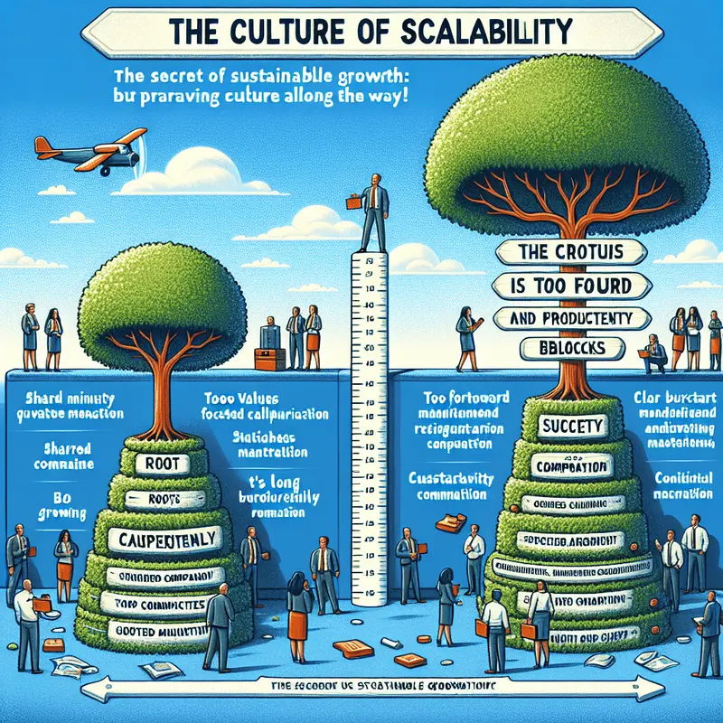
“Da Eficácia ao Caos: O Duelar entre Lucro e Burocracia nas Empresas Modernas”
Olá, pessoal! Hoje vamos explorar uma das estratégias mais eficazes para o crescimento sustentável de uma empresa: a escalabilidade. Muitas vezes, a escalabilidade é associada apenas ao crescimento rápido, mas ela vai muito além disso. Trata-se de manter a cultura organizacional e a eficiência…
“Como Lidar com a Rejeição da Sua PR: Dicas para Transformar Feedback em Oportunidade!”
Bem-vindo ao nosso blog, onde mergulhamos no mundo das relações públicas e compartilhamos insights valiosos para ajudá-lo a enfrentar seus desafios. Hoje, estamos discutindo um aspecto crucial das RP: como lidar com a rejeição. Seja um cliente dizendo não para a sua proposta ou um jornalista…
“Realidade Desvendada: A Verdade Oculta da Saúde no Mundo da Tecnologia”
Olá, pessoal! Hoje vamos abordar um tema essencial para quem está pensando em ingressar ou já faz parte da área de tecnologia: os desafios reais que você enfrentará nesse universo. Embora a tecnologia ofereça benefícios incríveis e oportunidades de crescimento, é fundamental entender os obstáculos…
“Transforme Seu Home Office: Dicas Infalíveis para Aumentar a Produtividade e Evitar o Burnout!”
Trabalhar remotamente tem se tornado cada vez mais comum, oferecendo flexibilidade e inúmeras oportunidades profissionais. No entanto, para maximizar a produtividade e manter um equilíbrio saudável entre vida pessoal e profissional, é essencial adotar hábitos disciplinados e criar um ambiente de…
Inteligência Artificial no Desenvolvimento Frontend: Design AI e Vibe Code
Neste post, vamos explorar como a inteligência artificial está revolucionando o desenvolvimento frontend e o design através do conceito de Vibe Code. Descubra como você pode utilizar essas tecnologias para otimizar seu trabalho e evitar erros comuns. Sumário 🌟 Introdução ao Vibe Code 🌐 O que é Web…
“Emprego Não Define Sua Vida: Valorize Seu Tempo e Tenha um Plano B!”
Você já se sentiu inseguro em relação à estabilidade do seu emprego? Com o mercado de trabalho tão volátil, a ameaça de layoffs pode surgir a qualquer momento, deixando profissionais desamparados e incertos sobre o futuro. Neste artigo, vamos explorar por que “Qualquer Emprego é Descartável” e a…
“Trabalho Remoto: A Flexibilidade que Atraí os Melhores Profissionais e Impulsiona Resultados!”
A flexibilidade no trabalho remoto tem se consolidado como uma tendência indispensável no cenário corporativo moderno. A recente decisão da Starbucks de contratar Brian Niccol, ex-CEO da Chipotle, como novo líder da empresa, reforça essa visão. Niccol, responsável por elevar o valuation da Chipotle…
10 Linhas de Código CSS para Turbinar Seus Projetos Web
10 Estratégias Inovadoras de CSS para Melhorar Seus Projetos Web O uso inteligente de CSS pode trazer grandes benefícios ao design e funcionalidade de um site. A seguir, exploramos dez técnicas de CSS que podem transformar sua abordagem de desenvolvimento web. 1. Limitação da Largura de Conteúdo…
Como a Inteligência Artificial e os MCPs Estão Revolucionando o Desenvolvimento com AI
Neste artigo, vamos explorar como os Model Context Protocols (MCPs) estão transformando o desenvolvimento frontend e design com AI. Compreenderemos o que são MCPs, por que estão em alta e como podem ser aplicados na sua rotina de codificação. Índice Passo 1: Introdução aos MCPs 🚀 Passo 2: O que é…
Next.js 14: Otimize Performance, Segurança e SEO com Server Components
### **Next.js 14: Elevando Performance, Segurança e SEO com Server Components** ### **Entendendo os Server Components** No ambiente de desenvolvimento web atual, o Next.js 14 surge como uma poderosa atualização, introduzindo os Server Components. Esta inovação permite uma abordagem balanceada entre…
Reclame e Resolva: 3 estratégias para transformar críticas em soluções eficazes
Reclame e Resolva: 3 estratégias para transformar críticas em soluções eficazes 1. Identificar a causa raiz Antes de propor soluções, é essencial entender o problema em profundidade. Isso envolve analisar dados, ouvir todas as partes envolvidas e evitar simplificações. Por exemplo, se um sistema de…
OpenAI e Google Defendem Direito de IA a Treinar em Conteúdo Protegido por Direitos Autorais por Segurança Nacional
A tecnologia de Inteligência Artificial (IA) tem avançado a passos largos, e um dos debates mais acalorados é a questão do uso de conteúdo protegido por direitos autorais para o treinamento de modelos de IA. OpenAI e Google estão na vanguarda dessa discussão, defendendo o direito das IAs treinarem…
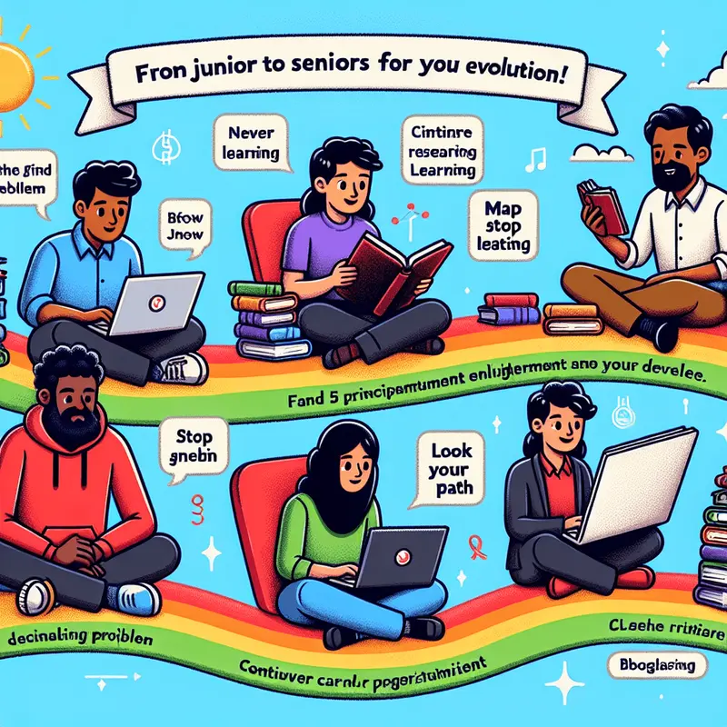
“Cinco Princípios para Transformar-se em um Desenvolvedor Sênior de Sucesso!”
Na jornada de um desenvolvedor, a transição de júnior para sênior é um marco significativo que demanda dedicação, aprendizado contínuo e estratégias bem definidas. Neste artigo, exploramos 5 Princípios para Crescer de um Desenvolvedor Júnior a um Sênior, proporcionando insights valiosos para quem…
Guia Completo para Conectar Servidores MCP com n8n: Inteligência Artificial no Desenvolvimento
Neste guia, vamos explorar como conectar servidores MCP ao n8n, utilizando inteligência artificial para otimizar seu design frontend. Se você está pronto para mergulhar no desenvolvimento com design AI, este tutorial passo a passo é para você! Índice Passo 1: O Que Vamos Cobrir 🚀 Passo 2: Visão…
OpenAI Lança Ferramentas Inovadoras para Auxiliar Empresas na Criação de Agentes de IA
A evolução da inteligência artificial está cada vez mais presente no cenário empresarial moderno. A OpenAI, uma das empresas líderes desse setor, lançou recentemente uma série de ferramentas inovadoras para facilitar o desenvolvimento de agentes de IA no ambiente corporativo. Esses agentes…
Como Melhorar seu Perfil do LinkedIn em 5 Minutos
“`html Fala, Galera! Aqui é o Felipe Vieira, e hoje vou te mostrar como otimizar seu perfil no LinkedIn em apenas 5 minutos. Vamos lá? 1. Foto Acesse seu perfil e troque a foto por uma selfie bem enquadrada. Certifique-se de que a foto não corte sua cabeça e que você não esteja muito distante […]
“Inteligência Artificial: A Moda Que Complica em Vez de Solucionar!”
🔍 A Febre da Inteligência Artificial: Um Alerta para Empresas A inteligência artificial (IA) está em alta, e muitas empresas estão ansiosas para incorporá-la em seus produtos e serviços. No entanto, em vez de criar soluções realmente úteis e focadas nas necessidades dos clientes, muitas estão…
OpenAI e o Futuro da IA: $20.000 por Mês em Agentes que Revolucionam Indústrias
## O Potencial da Inteligência Artificial de Alto Valor no Mercado Moderno O mundo tecnológico está evoluindo de forma rápida e significativa. Uma das áreas que mais tem atraído atenção é a da inteligência artificial (IA), com desenvolvimentos que têm potencial para moldar o futuro de diversas…
“Desenvolvedores: Aprenda a Vender Seu Talento e Multiplique Suas Oportunidades!”
Olá, desenvolvedores! No mercado competitivo de desenvolvimento de software, destacar-se é essencial. E a chave para isso vai além das suas habilidades técnicas: é sobre a arte de vender você mesmo. Este artigo irá guiá-lo através dos passos para construir uma marca pessoal sólida que não apenas…
Perspectiva e Gratidão no Mundo da Programação
Olá, galera! Aqui é o Felipe Vieira, e hoje vamos falar sobre um tema que vejo frequentemente: o vale de lamentações no mundo da programação. É incrível como escuto um coro de lamentações nesta área. Sim, ser desenvolvedor tem seus desafios: prazos apertados, códigos teimosos e a constante…
“Prepare-se para se Tornar um Desenvolvedor Sênior: Dicas Essenciais para Sua Evolução Profissional!”
Se você está pronto para se tornar um desenvolvedor sênior, então atenção: Encontre um Mentor para Aprender e se Guiar Ter um mentor é fundamental para qualquer carreira em desenvolvimento de software. Um mentor experiente pode compartilhar suas vivências, oferecer feedback valioso e ajudar você a…
OpenAI Lança GPT-4.5: O Maior Modelo de Linguagem com Inteligência Emocional e Menos Erros
A OpenAI revelou recentemente o GPT-4.5, seu modelo de linguagem mais avançado até o momento, projetado para aprimorar as capacidades do ChatGPT. Esta atualização significativa visa melhorar a capacidade do modelo de reconhecer padrões, fazer conexões e gerar insights criativos sem a necessidade de…
“Aprenda Coisas Novas Rápido: 6 Passos Para Dominar Qualquer Conhecimento!”
Bem-vindo ao nosso blog, onde exploramos o mundo do aprendizado rápido. Hoje, vamos abordar uma abordagem estruturada para dominar novas habilidades e adquirir conhecimentos de forma eficiente. Seja você um desenvolvedor, um podcaster ou simplesmente alguém ansioso para aprender, estes passos irão…
Deep Research da OpenAI Agora Acessível a Todos os Usuários Pagantes do ChatGPT
Acesso Ampliado ao OpenAI Deep Research para Usuários Pagantes do ChatGPT Recentemente, a OpenAI anunciou uma grande atualização: a disponibilização do seu avançado OpenAI Deep Research para todos os usuários pagantes do ChatGPT. Esta decisão promete expandir significativamente as capacidades dos…
Lidando com a Rejeição de um Pull Request: Uma Abordagem Madura
“`html Fala, galera! Aqui é o Felipe Vieira, e hoje vamos conversar sobre como lidar com a rejeição de um Pull Request (PR), especialmente quando ele vem com muitos comentários, incluindo vários “nits” (problemas menores). Não Faça: Leve para o lado pessoal: A rejeição não é uma crítica a você…
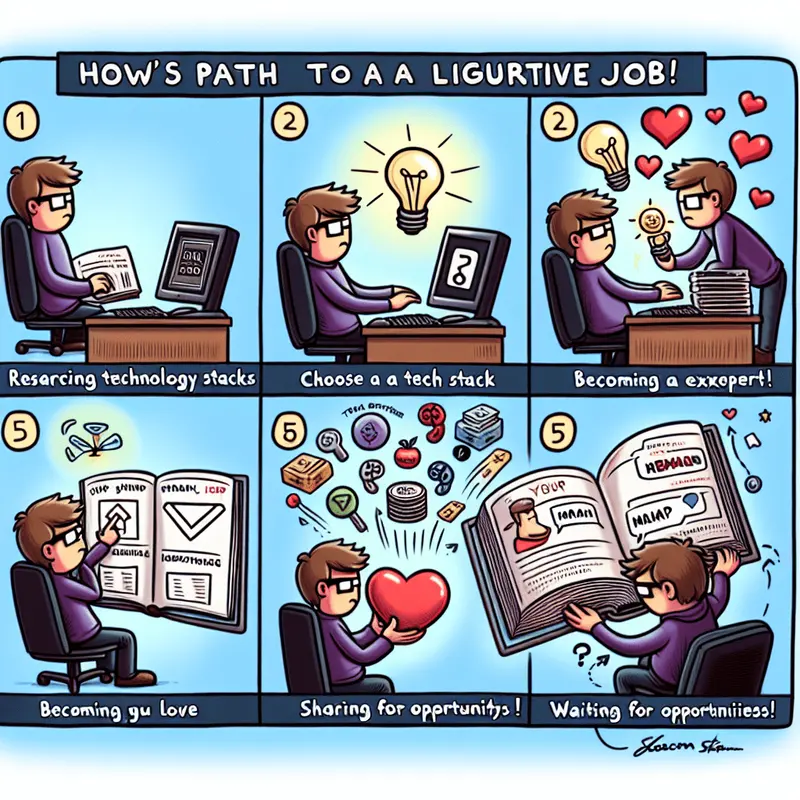
“Desvende o Caminho para um Emprego Lucrativo como Desenvolvedor: Dicas para Dominar a Tecnologia em Alta Demanda!”
Se você está em busca de um emprego lucrativo como desenvolvedor, é essencial entender que a demanda por profissionais habilidosos está em constante crescimento. O mercado de tecnologia oferece inúmeras oportunidades para aqueles que se destacam, e seguir um caminho estratégico pode ser a chave…
Artistas lançam álbum silencioso para protestar contra mudanças de copyright que favorecem empresas de IA
Mil Músicos Lançam Álbum “Silencioso” em Protesto Contra Mudanças na Lei de Direitos Autorais do Reino Unido Em um esforço coletivo marcante, um grupo de 1.000 músicos, incluindo nomes renomados como Kate Bush, Imogen Heap, Max Richter e Hans Zimmer, lançou um álbum “silencioso” intitulado Is This…
Inteligência Artificial no Desenvolvimento Frontend: Explorando o Novo Design da Cursor 0.46 com AI
Neste artigo, vamos explorar como a inteligência artificial está revolucionando o desenvolvimento frontend e o design com a nova atualização da Cursor 0.46. Através de uma série de passos, você aprenderá a utilizar as novas funcionalidades e melhorias que a IA traz para otimizar seu fluxo de…
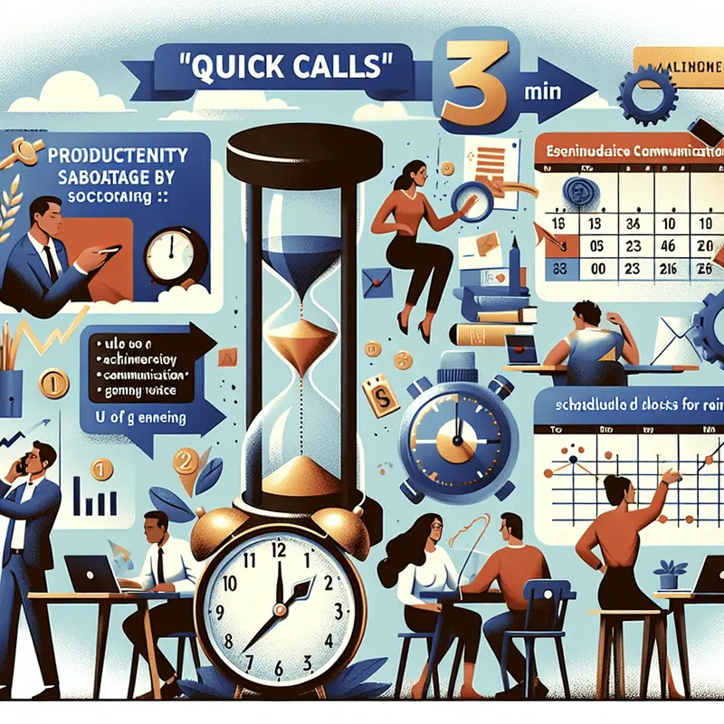
“Como uma ‘ligação rápida’ pode derrubar sua produtividade: Dicas para evitar a queda e manter o foco!”
Imagine estar no meio de um fluxo produtivo, produzindo trabalho e se sentindo imparável. De repente, uma “ligação rápida” interrompe seu momento e sua produtividade despenca. Esse fenômeno é mais do que apenas um contratempo menor; é uma queda significativa na eficiência que pode levar muito tempo…
Como Usar a Inteligência Artificial no Desenvolvimento Frontend com Claude 3.7: Um Guia Passo a Passo
Neste post, vamos explorar como a inteligência artificial está revolucionando o desenvolvimento frontend design ai, utilizando o Claude 3.7. Vamos criar uma interface de máquina arcade dos anos 80 do zero, mostrando como essa nova ferramenta pode transformar seu fluxo de trabalho de codificação.…
Microsoft revela Majorana 1: um avanço revolucionário em computação quântica com qubits topológicos.
A Microsoft revolucionou o campo da computação quântica ao lançar o chip Majorana 1, um processador quântico impulsionado por qubits topológicos. Esta inovação marca um avanço significativo, prometendo resolver problemas industriais de grande escala em questão de anos e não décadas. A peça-chave…
A Realidade da Área de Tecnologia: Além dos Benefícios
“`html Olá, galera! Aqui é o Felipe Vieira, e hoje quero falar sobre um tema importante que, às vezes, passa despercebido: o preço que a área de tecnologia cobra. A Área de Tecnologia Cobra seu Preço A gente sabe que trabalhar com tecnologia tem seus benefícios, principalmente porque falta mão de…
Fatores Críticos para Construir o Melhor Software: Maturidade, Orçamento e Restrições Técnicas
Construindo Software de Alto Desempenho: Fatores Chave para o Sucesso O desenvolvimento de software é uma empreitada que exige mais do que apenas habilidades técnicas. Para alcançar o “melhor” resultado, é essencial considerar uma gama de fatores críticos, que incluem o momento do negócio, a…
“Desmistificando a Programação: O Verdadeiro Papel do Desenvolvedor Vai Além do Código”
Ser um Desenvolvedor: Muito Além da Escrita de Código Você já parou para pensar que ser um desenvolvedor vai muito além de simplesmente escrever código? Embora a programação seja uma habilidade essencial, há diversos outros aspectos que definem um excelente profissional na área de desenvolvimento…
Fundamentos Essenciais do Desenvolvimento Web: Tendências e Tecnologias que Você Deve Conhecer
O universo do desenvolvimento web nunca foi tão vibrante e desafiador como atualmente, com rápidas evoluções tecnológicas e novas tendências moldando a maneira como interagimos com a internet. Acompanhar essas mudanças é vital para qualquer profissional que deseja se destacar e conquistar…
Passo a Passo: Inteligência Artificial e Desenvolvimento Frontend com Design AI
Neste guia, vamos explorar como a inteligência artificial pode revolucionar o desenvolvimento frontend e design, utilizando ferramentas inovadoras como o Data Button. Se você é um criativo sem experiência em programação ou um desenvolvedor buscando agilidade, este tutorial é para você. Sumário…
Mira Murati Lança Thinking Machines Lab Focado em Colaboração e Segurança em IA
Mira Murati, ex-diretora técnica (CTO) da OpenAI, lançou uma nova startup chamada Thinking Machines Lab. Este empreendimento tem como objetivo focar na colaboração entre humanos e Inteligência Artificial, tornando os sistemas de IA mais acessíveis e personalizáveis. Objetivos-Chave Colaboração…
OpenAI Não Está à Venda: Altman Rejeita Oferta de Musk e Foca em AGI para a Humanidade
Na última década, a inteligência artificial (IA) tem sido um dos tópicos mais discutidos em tecnologia e negócios. Com o crescimento exponencial do setor e o aumento da competição, questões sobre propriedade, regulamentação e impacto econômico e social têm surgido no cenário internacional. Nesta…
Dicas para Melhorar seu Trabalho Remoto
“`html Olá, galera! Aqui é o Felipe Vieira, e hoje eu quero compartilhar algumas ideias sobre como criar um ambiente de trabalho adequado para quem trabalha de casa e evitar o famoso burnout. 1. Crie um Ambiente de Trabalho Adequado Nunca trabalhe da cama! Tenha um “cantinho do trabalho” dedicado…
Erros Comuns de Desenvolvedores Júnior: Aprenda a Superá-los E Evolua na Programação
### 1. **Falta de Planejamento ao Abordar um Projeto** Entender como abordar um projeto pode ser um grande desafio para desenvolvedores júnior. Muitas vezes, eles pulam a fase de planejamento, o que leva a falta de organização e atrasos na entrega. O planejamento é fundamental para definir o…
5 Dicas Essenciais para Engenheiros de Software: Aprenda e Faça Menos para Ser Mais Eficiente
Quanto mais você progride na carreira de engenharia de software, mais percebe o valor de compreender e ponderar os aspectos de cada decisão. A chave para o sucesso muitas vezes reside em fazer menos, mas de forma mais eficaz, o que pode ser alcançado seguindo algumas práticas valiosas. 1. Domine a…
Seja um ninja no Cursor.ai: Configuração Completa
Neste guia, vamos explorar como as novas regras do Cursor podem transformar sua produtividade no desenvolvimento. Com a inteligência artificial ao seu lado, você aprenderá a aplicar regras específicas que aceleram o processo de codificação e tornam o design mais eficiente. Índice ✨ Passo 1:…
Elon Musk e o DOGE: Uso de IA para Otimizar Gastos Federais e Desafios de Segurança Pública
No mundo da tecnologia e inovação, há sempre novos desafios e oportunidades surgindo. Com a crescente digitalização, a eficiência no uso de recursos e a transparência tornaram-se cruciais para muitas organizações governamentais. A mais recente inovação tecnológica surge sob a forma de inteligência…
7 Dicas Práticas para Aumentar a Produtividade e Bem-Estar no Trabalho Remoto
O trabalho remoto se consolidou como uma realidade em diversas empresas ao redor do mundo e, para que ele seja produtivo e saudável, é essencial adotar práticas que evitem o burnout, o tédio e o isolamento. Vamos explorar 7 dicas valiosas para melhorar sua experiência no home office e promover…
9 casos que o ChatGPT Deep Research resolve e você nem imaginava
Prepare-se para descobrir usos insanos que podem otimizar seu trabalho e potencializar seus resultados, tudo isso enquanto você aprende a usar essa tecnologia inovadora. Table of Contents Passo 1: Introdução ao ChatGPT Deep Research 🚀 Passo 2: O que é o ChatGPT Deep Research? 🤖 Passo 3: Aprendendo…
OpenAI Lança Agente ChatGPT para Pesquisa Profunda com Recursos Avançados e Relatórios Detalhados
OpenAI lançou um novo agente ChatGPT projetado para pesquisa profunda, uma funcionalidade que permite à IA conduzir tarefas de pesquisa complexas de forma independente. Este novo agente é um avanço significativo em relação aos modelos anteriores, possibilitando o planejamento e execução de…
Salário de Programador: A Maratona do Sucesso com Visão, Disciplina e Aprendizado Contínuo
Alcançar grandes salários na programação não é uma tarefa fácil. Com determinação, visão clara e um plano bem estruturado, é possível se destacar no mercado de trabalho e alcançar patamares financeiros acima de R$15.000. Neste artigo, vamos explorar os fatores fundamentais que contribuem para o…
O que é MCP no âmbito da IA e o porquê que você deveria estar falando dele
Você já imaginou uma inteligência artificial que conecta tudo o que você usa no dia a dia de forma simples e eficiente? Com o lançamento do MCP (Model Context Protocol), a Anthropic está revolucionando o desenvolvimento frontend design ai e a automação de tarefas. Neste guia, vamos explorar como…
Emprego: Apenas uma Parte da Sua Vida
“`html Fala, Galera Aqui é o Felipe Vieira, desenvolvedor front-end sênior e designer. Hoje quero falar com vocês sobre uma verdade que, às vezes, a gente esquece: emprego é descartável. Qualquer Emprego Pode Acabar de Uma Hora Pra Outra É isso mesmo. Qualquer emprego pode acabar de uma hora pra…
OpenAI busca levantar US$ 40 bilhões com nova avaliação de US$ 340 bilhões; Google lança recurso de IA
A OpenAI está em negociações para levantar nada menos que US$ 40 bilhões em financiamento, avaliando a empresa em impressionantes US$ 340 bilhões. Liderada pela SoftBank, esta rodada de investimentos visa apoiar as operações contínuas da OpenAI e seu ambicioso projeto “Stargate”, que envolve a…
Meta Mobiliza Equipes para Analisar Avanço da IA da DeepSeek e Suas Implicações na Indústria
No dinâmico mundo da inteligência artificial (IA), a competição muitas vezes conduz a inovações que podem mudar significativamente o cenário tecnológico. Recentemente, a startup chinesa DeepSeek lançou seu modelo R1, uma solução de IA que promete oferecer desempenho semelhante a modelos mais caros…
5 Princípios para Crescer de Desenvolvedor Júnior a Sênior
Fala, galera! Aqui é o Felipe Vieira, desenvolvedor front-end sênior e designer. Hoje vamos falar sobre os passos pra você se tornar um desenvolvedor sênior e se destacar na sua carreira. 1. Entenda o Problema Os melhores desenvolvedores sêniores planejam e pesquisam antes de codar. Eles garantem…
Como a Inteligência Artificial Está Construindo PÉSSIMOS programadores
A inteligência artificial está revolucionando o desenvolvimento frontend, mas será que estamos nos tornando analfabetos em programação? Neste guia, vamos explorar como a dependência da IA pode afetar nossas habilidades e o que podemos fazer para manter o domínio sobre nosso trabalho. Índice Passo…
Aprenda Frameworks e Linguagens de Programação: Um Guia Prático para Desenvolvedores Eficazes
Aprender uma nova linguagem de programação ou framework é um passo importante na carreira de qualquer desenvolvedor. Não apenas melhora suas habilidades técnicas e suas perspectivas profissionais, mas também lhe permite contribuir de maneira mais significativa para diferentes projetos e…
OpenAI Lança Operator: Agente de IA que Executa Tarefas Autonomamente com Supervisionamento do Usuário
A OpenAI lançou recentemente o Operator, uma prévia de pesquisa de seu primeiro agente de IA de uso geral, projetado para realizar tarefas de forma autônoma, como agendar viagens, fazer reservas e compras online. Este inovador agente está inicialmente disponível para usuários nos EUA, no plano de…
Project Stargate: Iniciativa de $500 Bilhões para Avançar Infraestrutura de IA nos EUA
A OpenAI anunciou o Projeto Stargate, uma iniciativa de US$ 500 bilhões que visa a construção de nova infraestrutura de AI nos Estados Unidos. Este projeto ambicioso pretende investir US$ 100 bilhões imediatamente, começando o desenvolvimento no Texas e avaliando possíveis locais pelo país para…
A Febre da Inteligência Artificial e a Necessidade de Foco no Valor Real
Introdução:Fala, galera! Aqui é o Felipe Vieira, desenvolvedor front-end sênior e designer. Hoje eu quero bater um papo com vocês sobre uma tendência que tá tomando conta do mercado, mas que nem sempre é bem aplicada: a IA no pitch de vendas. A IA no Pitch de Vendas: Uma Tendência Mal Aplicada…
OpenAI e Retro Biosciences: Parceria Inovadora para Aumentar a Longevidade Humana com IA
Recentemente, a OpenAI anunciou uma colaboração inovadora com a Retro Biosciences para desenvolver um modelo de inteligência artificial (IA) destinado a potencialmente aumentar a longevidade humana em até 10 anos. Esta iniciativa visa aproveitar as capacidades da IA para desbloquear avanços em…
Tutorial Passo a Passo: Instalando o Langflow no seu próprio servidor
Neste tutorial, vamos explorar como instalar o Langflow em uma VPS utilizando a ferramenta Coolify, uma solução que combina inteligência artificial com desenvolvimento frontend e design AI. Ao final, você terá uma instância funcional do Langflow pronta para uso. Sumário Passo 1: Introdução ao…
ChatGPT Agora Gerencia Lembretes e Tarefas: Um Avanço Rumo à Automação de Tarefas
Na crescente evolução da Inteligência Artificial, o ChatGPT tem se destacado ao introduzir funcionalidades que buscam melhorar a produtividade e a eficiência dos seus usuários. Uma dessas novidades é a funcionalidade “Tarefas”, que permite a automação de lembretes e afazeres diretamente no…
Como Todo Desenvolvedor Deve Estudar Vendas
“`html Fala, Galera! Aqui é o Felipe Vieira, desenvolvedor front-end sênior e designer com mais de 15 anos de estrada. Hoje vamos falar de um assunto que, pra muita gente, pode parecer meio estranho: a arte de se vender como desenvolvedor. Por que Se Vender como Desenvolvedor é Fundamental?…
Google DeepMind Forma Nova Equipe para Criar Modelos de Mundo Revolucionários em IA
Introdução à Formidável Iniciativa da Google DeepMind A Google DeepMind anunciou uma nova equipe, significando um movimento audacioso no cenário de Inteligência Artificial (IA), dedicada ao desenvolvimento de “modelos de mundo” que simulam ambientes físicos. Dirigida por Tim Brooks, ex-pesquisador…
OpenAI Foca em Superinteligência: Desafios, Progresso e Implicações para a Humanidade
A OpenAI anunciou uma mudança significativa em seu foco, movendo sua meta de inteligência artificial geral (AGI) para superinteligência. Esta transição é motivada pela confiança da empresa na sua capacidade de construir AGI, conforme afirmou o CEO Sam Altman em posts recentes no blog TechRepublic,…
Como se Tornar um Desenvolvedor Sênior
“`html Olá, galera! Aqui é o Felipe Vieira, desenvolvedor front-end sênior e designer com mais de 15 anos na área. E hoje o papo é pra quem tá querendo dar aquele salto na carreira e se tornar um desenvolvedor sênior. Se liga nesses três pontos essenciais que podem te ajudar a chegar lá: 1.…
OpenAI Leva ChatGPT para o Telefone Fixo com Acesso Gratuito de 15 Minutos nos EUA
A OpenAI introduziu uma maneira inovadora de interagir com o ChatGPT: através de uma linha telefônica. Com o número 1-800-CHATGPT, usuários nos EUA têm 15 minutos de acesso gratuito mensalmente, enquanto usuários ao redor do mundo podem trocar mensagens por WhatsApp. Principais Funcionalidades:…
Inteligencia Artificial e Desenvolvimento Frontend: Um Guia Prático com Git e GitHub
Neste guia, exploraremos como a inteligência artificial pode otimizar o desenvolvimento frontend, utilizando ferramentas como Git e GitHub. Aprenda a organizar seu código e a aplicar práticas eficientes de design AI em seus projetos. Índice Passo 1: Por que usar Git com Ferramentas…
NVIDIA Lança Jetson Orin Nano: Supercomputador de IA Acessível para Desenvolvedores e Entusiastas
NVIDIA Lança o Supercomputador de IA Generativa Mais Acessível: Um Marco para Desenvolvedores e Entusiastas A NVIDIA inovou mais uma vez com o lançamento do Jetson Orin Nano Super Developer Kit, um supercomputador de IA generativa compacto projetado para revolucionar a maneira como desenvolvedores,…
Ser um Desenvolvedor Não é Sobre Escrever Código
“`html Fala, Galera! Aqui é o Felipe Vieira, Desenvolvedor Front-End Sênior e Designer com mais de 15 anos de experiência na área. Hoje eu vou compartilhar com vocês uma perspectiva diferente sobre o que realmente importa no papel de um desenvolvedor. Contrariando a Crença Popular, Ser um…
Google Lança Deep Research: Seu Assistente Pessoal de Pesquisa com IA para Empreendedores e Pesquisadores
O Google lançou o Pesquisa Profunda, uma ferramenta impulsionada por IA projetada para otimizar a pesquisa online. Esta funcionalidade inovadora faz parte do bot Gemini, disponível exclusivamente para assinantes do Gemini Avançado. O Pesquisa Profunda permite que os usuários solicitem relatórios…
OpenAI Lança Canvas para Todos os Usuários do ChatGPT em Meio a Desafios Legais
OpenAI recentemente anunciou que o recurso Canvas, anteriormente exclusivo para assinantes pagantes, agora está disponível para todos os usuários do ChatGPT. Apresentado durante a transmissão ao vivo “12 Dias de OpenAI”, o Canvas transforma a interface clássica do ChatGPT em uma exibição de dois…
10 Práticas Essenciais para Garantir o Sucesso no Desenvolvimento de Software de Qualidade
O desenvolvimento de software de qualidade não é uma tarefa simples. Envolve várias etapas e requer uma abordagem estruturada para garantir que o produto atenda às necessidades dos clientes enquanto mantém padrões altos de qualidade e eficiência. Neste artigo, vamos explorar as melhores práticas…

Como Conseguir um Emprego Bem Pago como Desenvolvedor
“`html Olá, amigos! Aqui é o Felipe Vieira, desenvolvedor front-end sênior e designer com mais de 15 anos de experiência na área. Hoje, quero compartilhar com vocês alguns passos essenciais para garantir um emprego bem remunerado como desenvolvedor. O mercado de tecnologia está em constante…
Inteligencia Artificial e o Desenvolvimento Frontend: Comparação entre Tempo Labs, Bolt e v0
Neste artigo, exploramos como a inteligencia artificial está revolucionando o desenvolvimento frontend com ferramentas como Tempo Labs, Bolt e v0. Vamos discutir como essas soluções podem otimizar o design e a criação de aplicativos, tornando o processo mais eficiente e acessível. Sumário 🛠️…
Reuniões Eficientes: Dicas Práticas para Transformar Seu Ambiente de Trabalho e Aumentar a Produtividade
Reuniões são uma parte integrante do nosso dia a dia profissional. Contudo, é comum que se tornem monótonas ou improdutivas quando não são bem geridas. Transformar essas reuniões em eventos eficientes pode redefinir a dinâmica da sua equipe e aprimorar o desempenho organizacional. Aqui, vamos…
Novo modelo de IA do Google supera principais sistemas de previsão do tempo em precisão e velocidade
O Novo Modelo de Inteligência Artificial da Google Supera o Sistema Meteorológico de Ponta A Google DeepMind revelou um novo modelo de inteligência artificial, o GenCast, que supera os sistemas meteorológicos atuais em precisão e velocidade. O GenCast, detalhado em um estudo publicado na Nature,…
OpenAI Considera Publicidade para Ampliar Receitas e Fortalecer Modelos de Negócios
A OpenAI, uma start-up de inteligência artificial avaliada em US$150 bilhões e criadora do ChatGPT, está explorando a possibilidade de incorporar publicidade em seus produtos como parte de uma estratégia para ampliar suas fontes de receita. Conforme mencionado por Sarah Friar, CFO da OpenAI, em…
Criando Sites Incríveis com a Ajuda da IA: Uma Jornada de Início ao Fim
A IA pode transformar o processo de criação de sites, facilitando a comunicação com clientes e otimizando o design UI UX.
Desbravando Fluxos de Desenvolvimento com VPS: Uma Experiência de Aprendizado
Este post ensina a configurar um VPS, hospedar múltiplas aplicações e otimizar o ambiente de desenvolvimento com dicas práticas e insights de um especialista.
Desvendando a Magia das Ferramentas AI No Code: Como Criei um SaaS em Poucos Passos
Usando ferramentas AI no code como lovable.dev, é possível construir um micro SaaS eficiente rapidamente. Explore as etapas e erros comuns no processo para alavancar seu próximo projeto.
Explorando o Potencial dos Micro SaaS com Inteligência Artificial: Ideias e Exemplos Inspiradores
Micro SaaS com IA estão revolucionando nichos ao oferecer soluções específicas de forma eficiente; conheça inspirações e dicas para criar o seu próprio produto sem precisar escrever códigos.
Explorando Projetos de Low-Code Open-Source para Desenvolvedores Criativos
Projetos de low-code no GitHub oferecem diversidade e inovação para desenvolvedores que buscam soluções flexíveis e escaláveis.
Jim Carrey ensina: siga sua paixão, o maior risco é não tentar e viver na segurança do fracasso.
Jim Carrey, famoso por suas atuações hilárias e carismáticas, além de ter conquistado a indústria do entretenimento, compartilhou lições de vida valiosas que ressoam profundamente com todos nós. Inspirado nas experiências de seu pai, Carrey nos leva a refletir sobre a importância de perseguir…
Por Que o Llama 3.3 70B Supera o GPT-4o e Claude 3.5 Sonnet
Llama 3.3 é mais eficiente e acessível que seus concorrentes, com suporte a oito idiomas e integração de ferramentas.
Desafios e Oportunidades na Carreira em Tecnologia: Como Superar o Estresse e Evoluir Sempre
Desafios e Oportunidades na Carreira em Tecnologia A área de tecnologia é um ambiente dinâmico e desafiador, onde a dedicação e a adaptação são fundamentais para o sucesso. Nos últimos anos, a tecnologia evoluiu rapidamente, exigindo que os profissionais estejam sempre atualizados e preparados para…
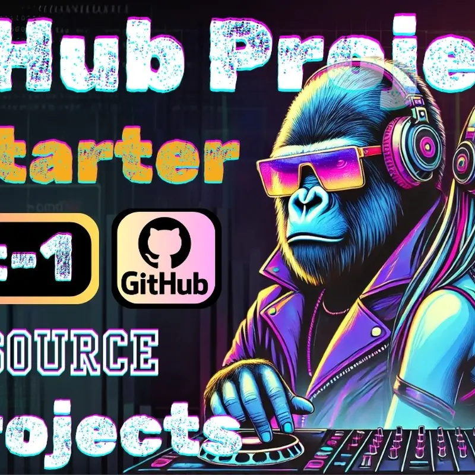
Descobertas de Code: Explorando Projetos Revolucionários de IA Open Source no GitHub
GitHub está se tornando um reduto de inovação com seus projetos de IA open source, do poderoso Agenta ao impactante FishSpeech, refletindo um futuro promissor para desenvolvedores.
Utilizando a API Popover: Simplificando Janelas Modais em Seu DOM com HTML e JavaScript
A API de Popover é uma adição recente ao HTML e JavaScript, trazendo um conjunto de APIs e atributos HTML que ajudam a criar janelas “modais” dentro do seu DOM de maneira simplificada. Esta funcionalidade é especialmente útil para diversas características, tais como: Caixas de login popup Mensagens…
O Mistério de David Mayer: Um Glitch que Levanta Questões sobre Privacidade e Inteligência Artificial
Nos últimos dias, um evento incomum envolvendo a inteligência artificial denominada ChatGPT provocou uma agitação nas redes sociais. O nome “David Mayer” tornou-se uma sensação na internet após usuários descobrirem que o ChatGPT se recusava a reconhecê-lo. Todas as tentativas de obter o nome do bot…
Vazamento do Gerador de Vídeo Sora da OpenAI Gera Controvérsias e Debate na Comunidade de IA
A recente atualização da poderosa ferramenta geradora de vídeos da OpenAI, o Sora, tem gerado um intenso debate dentro da comunidade de inteligência artificial. O que chama a atenção desta vez não é apenas o avanço tecnológico, mas um suposto vazamento que trouxe à tona uma série de implicações…
Como Aprender Coisas Novas Rapidamente
“`html Introdução: Você já se deparou com o desafio de aprender algo novo rapidamente e se perguntou como algumas pessoas conseguem? A boa notícia é que existem métodos comprovados que podem ajudar você a dominar novas habilidades de maneira mais eficaz. Neste artigo, apresento seis passos simples…
Nvidia Lança Fugatto: Gerador de Áudio AI que Cria Sons Inéditos e Revoluciona a Música
A NVIDIA lançou uma inovação impressionante no campo da geração de áudio com o Fugatto, um gerador de áudio de IA que promete “sons nunca ouvidos antes”. Este modelo avançado aproveita entradas de texto e áudio para gerar, transformar e manipular sons de maneiras inéditas, expandindo os limites da…
ChatGPT se prepara para teste beta de recurso de vídeo ao vivo que revolucionará interações com IA
OpenAI está se preparando para um lançamento mais amplo da versão beta de sua funcionalidade de Vídeo ao Vivo no ChatGPT, inicialmente apresentada durante o anúncio do GPT-4o em maio de 2024. Esta funcionalidade constrói sobre o Modo de Voz Avançado, que introduziu um elemento conversacional ao…
Descubra o que há de novo no Tailwind v4: Melhorias e Recursos Imperdíveis
O Tailwind v4 acaba de ser lançado em beta, trazendo uma série de melhorias e recursos que prometem transformar a experiência de desenvolvimento. Neste artigo, vamos explorar as principais mudanças e como elas podem beneficiar seus projetos. Índice 🌟 Introdução ao Tailwind v4 🚀 O que há de novo na…
O Lançamento do World: A Revolução do Super App de Sam Altman
Recentemente, Sam Altman, CEO da OpenAI, surpreendeu a todos com o lançamento do World, um super app que promete revolucionar a forma como interagimos com a tecnologia e a criptomoeda. Neste artigo, vamos explorar os detalhes desse projeto inovador, suas funcionalidades e o impacto potencial no…
Rodmap pra começar na tecnologia
“`html Por que Migrar para a Tecnologia? A tecnologia está em alta, oferecendo oportunidades incríveis. Descubra por que mudar para essa área pode ser a melhor decisão da sua carreira. Comece com Cursos Acessíveis Explore plataformas como Udemy e YouTube para aprender o básico de frontend e backend…
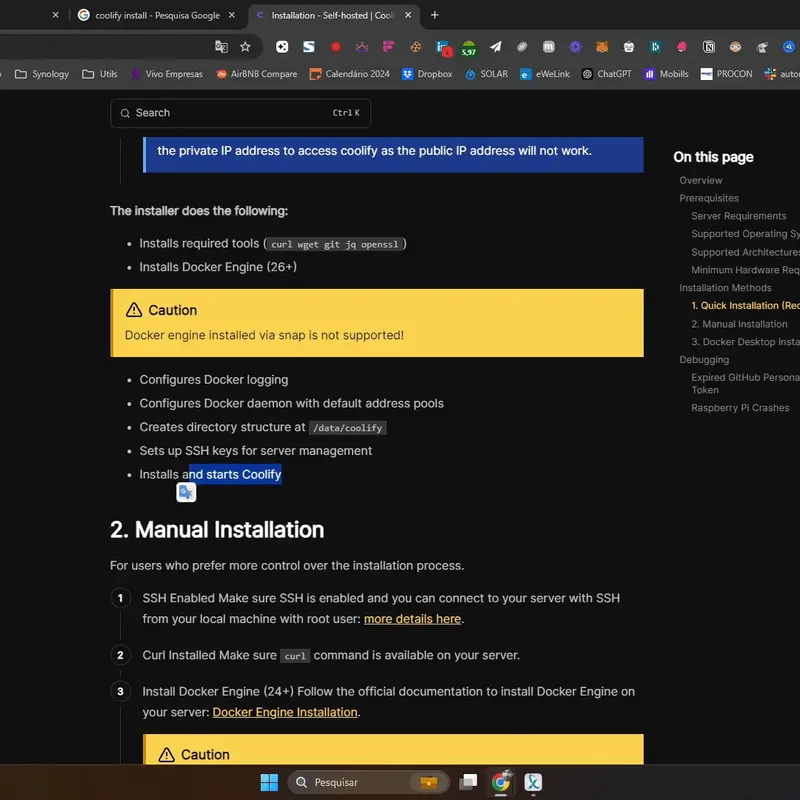
Como Fazer o Deploy de Aplicações Web com Coolify e VPS
Aprenda a implantar suas aplicações web de forma simples e eficiente utilizando a plataforma Coolify. Neste guia, abordaremos desde a configuração de uma VPS até o deploy automatizado com GitHub, permitindo que você leve suas aplicações ao ar de maneira profissional. 🌐 Introdução ao Deploy de…
OpenAI Expande Modo de Voz Avançado do ChatGPT para a Web, Melhorando Conversas Naturais
Expansão do Modo de Voz Avançado do ChatGPT para Navegadores A OpenAI está levando o Modo de Voz Avançado do ChatGPT para a web, permitindo que os usuários tenham conversas naturais e em tempo real diretamente de seus navegadores. Este recurso, que até recentemente estava disponível apenas em iOS e…
ChatGPT agora interage com aplicativos de desktop do Mac para otimizar o desenvolvimento de software
A OpenAI está inovando ao permitir que o ChatGPT interaja com aplicativos desktop do macOS, revolucionando a forma como desenvolvedores front-end e back-end trabalham com código. Essa nova funcionalidade é intitulada “Work with Apps”. Com suporte para diversos aplicativos de codificação como Visual…
Qual PC Comprar para iniciar na programação
Está pensando em qual PC comprar para começar na programação? Vamos ajudar a escolher o equipamento certo para você. A decisão de qual máquina comprar depende do seu orçamento e das necessidades básicas para iniciar na área. 1. Processador: Um bom ponto de partida é um processador que não esteja…
Quando e Por Que Contratar uma Assessoria de Carreira para Investir no Seu Futuro Profissional
O mundo do trabalho está em constante evolução, exigindo que profissionais se adaptem rapidamente às novas demandas e tendências. Nesse cenário, a contratação de uma assessoria de carreira emerge como uma solução estratégica para quem busca prosperar na vida profissional. Quando é o momento certo…
Desafios Enfrentados por OpenAI, Google e Anthropic na Busca por Dados de Treinamento de Qualidade
Os Desafios Enfrentados por OpenAI, Google e Anthropic no Desenvolvimento de IA Avançada OpenAI, Google e Anthropic, líderes no campo da inteligência artificial (IA), estão enfrentando desafios significativos em seus esforços para desenvolver modelos de IA mais sofisticados. Apesar de anos de…
Sam Altman Afirma que o Caminho para a Inteligência Artificial Geral Está Agora Claro
Recentemente, Sam Altman, CEO da OpenAI, fez uma declaração impactante sobre a jornada rumo à Inteligência Artificial Geral (AGI). Em uma entrevista recente, Altman afirmou que o caminho para a AGI está agora claro, e que a equipe da OpenAI conhece os passos necessários para atingir esse marco.…
Estrutura de Currículo: Dicas Valiosas para Se Destacar na Busca por Emprego!
Meu Primeiro Projeto de Desenvolvimento Web: Dicas Práticas para GitHub 1. Introdução ao GitHub GitHub é uma plataforma essencial para desenvolvedores colaborarem, compartilharem e gerenciarem seus projetos de software. Dominar o GitHub é um grande diferencial no mercado, especialmente para…
Programação como começar?
Está pensando em começar na programação, mas não sabe por onde começar? Você não está sozinho! 🖥️ Muitas pessoas se sentem perdidas com a quantidade de cursos e graduações disponíveis atualmente. Neste artigo, vamos explorar as opções, ajudando você a escolher a melhor forma de ingressar nesse…
Transforme Seu LinkedIn em 5 Minutos: Dicas Práticas para Brilhar no Mercado de Trabalho
Minuto 1: FOTO PROFISSIONAL Em apenas um minuto, você pode transformar a primeira impressão que seu perfil passa. Atualize sua foto com uma imagem de alta qualidade. Opte por um enquadramento que foque no seu rosto e evite elementos que desviem a atenção, como fundos bagunçados ou outras pessoas na…
Perplexity AI se oferece para apoiar NYT durante greve, gerando polêmica e críticas sobre ética no trabalho
Com o avanço constante da inteligência artificial, as aplicações dessa tecnologia têm gerado debates significativos na sociedade, principalmente quando se trata de sua integração em áreas sensíveis como o jornalismo. Recentemente, um caso que chamou atenção foi a oferta do CEO da Perplexity AI,…
Aprenda a aprender
Você já se perguntou como algumas pessoas conseguem aprender novas habilidades com tanta facilidade e rapidez? A verdade é que existem técnicas e métodos que podem facilitar esse processo. Neste artigo, vou compartilhar com você seis passos essenciais para aprender qualquer coisa de forma rápida e…
Full Stack: Domine Frontend e Backend com Práticas, Ferramentas e Tecnologias Atualizadas
Programação e Desenvolvimento de Software: Guia Completo para Profissionais Iniciantes e Avançados Se você está ingressando no campo da programação ou aprimorando suas habilidades, este guia fornece uma visão geral abrangente dos conceitos, ferramentas e práticas de desenvolvimento de software.…
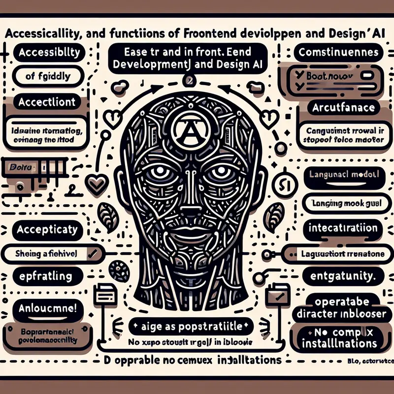
Explorando a Inteligência Artificial no Desenvolvimento Frontend: Design AI com Bolt.new
Neste artigo, vamos explorar como a inteligência artificial está transformando o desenvolvimento frontend e o design AI, com foco na ferramenta Bolt.new. Aprenda a utilizar essa poderosa ferramenta de forma gratuita e simplificada para potencializar seus projetos. Table of Contents 🌟 Introdução ao…
Desenvolvimento de Sites com bolt.new direto do seu pc: Um Guia Completo para Iniciantes
Neste tutorial, vamos explorar como utilizar low code inteligência artificial desenvolvimento para criar aplicações incríveis sem a necessidade de gastar com serviços pagos. Aprenda a configurar o Bolt.AI de forma gratuita no seu Windows e comece a desenvolver de maneira eficiente e econômica.…
Melhore Suas Habilidades de Programação e Construa um Ambiente Justo com 5 Dicas Eficazes
A jornada de qualquer desenvolvedor é repleta de desafios: deadlines apertados, códigos que parecem ter vida própria e a incessante busca por novos conhecimentos. Apesar de todas essas dificuldades, a programação é uma área cheia de oportunidades e recompensas. A seguir, descubra maneiras eficazes…
Oasis: Jogo Inovador da Decart Transforma Imagens em Mundos Dinâmicos em Tempo Real
Decart AI apresentou o Oasis, um jogo de videogame revolucionário gerado por IA que é executado em tempo real, aproveitando o poder da tecnologia Transformer. Este projeto inovador marca um passo importante na criação de mundos interativos complexos que simulam a experiência de jogar jogos como…
GitHub Spark: Criação de Aplicativos Web Facilitada com Linguagem Natural e Inteligência Artificial
GitHub Spark: Facilitando a Criação de Aplicações Web com Linguagem Natural GitHub Spark é uma ferramenta experimental projetada para simplificar a criação de aplicações web utilizando linguagem natural. Anunciada na conferência GitHub Universe em San Francisco, Spark permite que os usuários…
Cultura de Lucro e Eficiência: Como a Raízen Supera a Enrolação das Outras Empresas
Como a Eficiência e o Foco em Resultados Diferenciam Empresas no Mercado Atual No cenário corporativo competitivo de hoje, destacar-se no mercado requer mais do que oferecer um bom produto ou serviço. Exige uma cultura organizacional que priorize a eficiência, a comunicação direta e o foco em…
Gestão e Empreendedorismo para Desenvolvedores
“`html Quando você decide empreender, especialmente como desenvolvedor, é fundamental desenvolver habilidades de gestão para garantir o sucesso do seu negócio. Aqui estão algumas habilidades essenciais que você deve considerar. 1. Liderança e Comunicação A liderança é uma habilidade fundamental…
Rejeição do Pedido de PR em Cingapura: Motivos Comuns e Como Aumentar suas Chances de Aprovação
Por Que Sua Aplicação de Residência Permanente em Singapura Foi Recusada: Razões Comuns e Como Melhorar Suas Chances Se sua aplicação de Residência Permanente (PR) em Singapura foi recusada, é fundamental compreender as razões por trás da rejeição e tomar medidas proativas para aumentar suas…
Google desenvolve Jarvis, assistente de IA para automatizar tarefas no Chrome com Gemini 2.0
O Google está desenvolvendo um agente de inteligência artificial chamado “Jarvis” que funcionará dentro do Google Chrome. Este agente, alimentado pelo Gemini 2.0, foi projetado para automatizar tarefas cotidianas baseadas na web, como reunir pesquisas, comprar produtos e reservar voos.…
Claude 3.5 Sonnet: Riscos e Benefícios da Nova IA Que Pode Controlar Seu Computador
A Anthropic revelou uma versão atualizada de seu modelo de IA, o Claude 3.5 Sonnet, que agora pode interagir com aplicativos de desktop por meio de uma nova API “Uso de Computador”, atualmente em beta aberto. Essa capacidade permite que o modelo emule ações humanas, como pressionar teclas, cliques…
Desvendando a Tecnologia: O que novos profissionais precisam saber para se destacar na área
A área da tecnologia continua a ser uma das áreas mais dinâmicas e em constante crescimento no mercado global. Entrar neste setor pode oferecer inúmeras oportunidades, mas para ter sucesso, é crucial compreender seus desafios e se preparar de forma eficaz para enfrentá-los. Neste artigo, vamos…
Dicas Essenciais para Melhorar a Produtividade e Evitar Burnout no Trabalho Remoto
No atual cenário de trabalho remoto, maximizar a produtividade e evitar o burnout pode ser um desafio. Contudo, ao adotar uma abordagem estruturada, é possível criar um ambiente que favoreça o desempenho eficiente e sustentável. A seguir, exploro estratégias detalhadas que têm se mostrado eficazes.…
Mira Murati, ex-CTO da OpenAI, busca mais de US$ 100 milhões para sua nova startup de IA
Com a inteligência artificial (IA) se tornando um campo cada vez mais competitivo, a movimentação de figuras proeminentes da indústria gera grande interesse e especulação. Recentemente, a ex-CTO da OpenAI, Mira Murati, deu início a uma nova fase ao buscar mais de $100 milhões em financiamento para…
Parceria entre Microsoft e OpenAI enfrenta desafios e incertezas no cenário de inovação em IA
À medida que o panorama tecnológico continua a evoluir, a parceria entre a Microsoft e a OpenAI, outrora sólida, enfrenta desafios significativos. Apesar da colaboração inicial, que parecia uma promissora “melhor amizade no setor tecnológico,” a relação agora mostra sinais de desgaste. Pressões…
A Importância de um Plano B: Proteja Sua Vida Além do Trabalho Descartável
Num mundo cada vez mais incerto, onde mudanças no mercado podem acontecer de maneira abrupta e inesperada, ter um plano B não é apenas uma opção; é uma necessidade. O plano B oferece segurança em tempos de incerteza e permite uma transição mais suave em momentos de dificuldade. No ambiente…
O Poder da Flexibilidade no Trabalho Remoto: Lições do Novo CEO da Starbucks
O conceito de trabalho remoto, anteriormente visto com ceticismo por muitas empresas, está cada vez mais consolidado no mundo atual. Os profissionais visionários, como Brian Niccol, já compreenderam que a flexibilidade proporcionada por essa modalidade de trabalho não está relacionada à…
Justiça e Transparência: Desafios na Avaliação da Fairness do ChatGPT e Conflitos com Publicadores
O recente embate entre o New York Times e o motor de busca de inteligência artificial Perplexity ilustra o dilema enfrentado por publishers em todo o mundo: como proteger seu conteúdo da exploração por modelos de IA enquanto permanecem relevantes em um ambiente digital em evolução. As discussões…
Avanços em IA Biológica Refletem Progresso do GPT-3 em 2020 e Revolucionam Biotecnologia
No cenário atual de inteligência artificial (IA), especialmente na intersecção com a biologia, presenciamos um crescimento inovador comparável ao avanço do GPT-3 em 2020 no campo do processamento de linguagem natural. A Instadeep, a maior startup de IA da África, em parceria com a BioNTech, está…
Cinco Princípios para Evoluir de Desenvolvedor Júnior a Sênior com Sucesso
Domine os Fundamentos Para crescer de um desenvolvedor júnior para sênior, é imperativo dominar os fundamentos. Os desenvolvedores seniores dedicam tempo para planejar e pesquisar antes de codificar, garantindo uma compreensão aprofundada do problema e de como solucioná-lo. Isso envolve compreender…
A Febre da Inteligência Artificial: Como Evitar Frustrações e Criar Valor para o Cliente
A inteligência artificial (IA) continua a redefinir o panorama tecnológico, influenciando profundamente setores variados, desde a automação industrial até o marketing digital. No entanto, junto com a adoção acelerada, surgem também desafios que podem comprometer a eficácia e a inovação dessas…
Nobel de Física 2024 Reconhece Avanços em IA com Contribuições de Hopfield e Hinton
O Prêmio Nobel de Física de 2024 foi concedido a John J. Hopfield e Geoffrey E. Hinton por suas descobertas fundamentais em inteligência artificial, especificamente no desenvolvimento de redes neurais artificiais. Este reconhecimento ressalta as notáveis contribuições feitas por Hopfield e Hinton…
Modelo Movie Gen da Meta: Revolucionando a Criação de Vídeos com IA e Edição Personalizada
A Meta acaba de divulgar um avanço inovador em inteligência artificial com o Movie Gen, um poderoso modelo de geração de vídeo projetado para elevar a criação personalizada de vídeo e áudio a um novo patamar. Veja como o Movie Gen funciona e o que isso significa para o futuro da produção de vídeos.…
Todo Desenvolvedor Deve Aprender a Vender: Impulsione Sua Carreira e Aumente Seus Ganhos
### Por que Desenvolvedores Devem Estudar Vendas: Como se Vender e Impulsionar sua Carreira Como desenvolvedor, seu foco principal é a codificação. No entanto, entender como se vender é crucial para avançar em sua carreira. Aqui está o porquê: ### Por que Estudar Vendas? **1. Melhore Sua Marca**…
Habilidades Essenciais para se Tornar um Desenvolvedor Sênior: O Caminho para o Sucesso Profissional
Ser um desenvolvedor sênior vai além do domínio técnico; exige também um conjunto de habilidades interpessoais amplas e o entendimento profundo de soluções integrais. Se você deseja alcançar esse nível em sua carreira, é essencial focar nessas áreas cruciais. Vamos explorar os elementos-chave que…
OpenAI DevDay 2024: API em Tempo Real e Novidades para Desenvolvedores de IA
OpenAI recentemente realizou o tão aguardado DevDay 2024, um evento que destacou a importância de construir ferramentas utilizando seus modelos de inteligência artificial. Apesar de uma semana complicada, marcada por mudanças significativas no quadro executivo e grandes movimentações no setor de…
Meta Revela Orion: Os Óculos Inteligentes que Podem Transformar o Futuro da Tecnologia Wearable
À medida que a tecnologia avança, novas inovações estão revolucionando a forma como interagimos com o mundo ao nosso redor. Uma dessas inovações são os avançados óculos inteligentes Aurora, que prometem redefinir a experiência dos usuários com suas funcionalidades de realidade aumentada (AR).…
Aprenda Novas Habilidades Rapidamente: Dicas para um Processo Eficiente e Eficaz de Aprendizagem
Aprender uma nova habilidade pode parecer uma tarefa assustadora, mas com a abordagem correta, é possível acelerar esse processo e torná-lo mais eficiente. Aqui estão algumas estratégias comprovadas que podem ajudá-lo a dominar rapidamente qualquer habilidade que deseja aprender. Compreenda a Visão…
Estratégias Essenciais para Conquistar um Emprego Bem-Pago como Desenvolvedor
No mundo atual, onde a tecnologia avança rapidamente, obter um emprego de alta remuneração como desenvolvedor é o objetivo de muitos. No entanto, alcançar essa meta demanda planejamento estratégico e dedicação contínua. A seguir, apresento passos essenciais para ajudá-lo a conquistar uma posição de…
Avanço na Voz: OpenAI Lança Modo Avançado para Usuários Plus e Team com Novas Vozes
A OpenAI começou a disponibilizar o seu Modo de Voz Avançado (AVM) para uma gama mais ampla de clientes pagantes do ChatGPT, iniciando com os usuários dos planos Plus e Team. O AVM foi projetado para tornar as interações de voz com o ChatGPT mais naturais, trazendo uma interface renovada que…
Minimizando o Custo da Troca de Contexto: Estratégias para Aumentar sua Produtividade
Quem já esteve em um estado de fluxo produtivo e foi interrompido por uma “ligação rápida” conhece bem a sensação. Num momento você está na zona, produzindo muito e se sentindo imparável. No próximo, está em uma chamada que poderia ter sido um e-mail, e todo o seu impulso foi por água abaixo. Leva…
Artista de Música AI Fraudulento Recebe Multa de $10 Milhões e Enfrenta Prisão por Manipulação de Streaming
Michael Smith, um músico de 52 anos da Carolina do Norte, foi acusado de orquestrar um esquema elaborado para fraudar plataformas de streaming de música como Spotify, Apple Music e Amazon Music. De acordo com promotores federais, Smith usou inteligência artificial para criar centenas de milhares de…
Câmeras de IA Onipresentes: Larry Ellison Aborda o Futuro da Vigilância e Comportamento Social
Avanços na Inteligência Artificial: Uma Nova Era de Vigilância e Comportamento Ético Em um recente desenvolvimento, a OpenAI alcançou um marco significativo ao atingir cerca de 120 pontos no teste de QI da Mensa da Noruega com seu novo modelo de IA, “o1”. Essa conquista provocou discussões sobre as…
Cinco Estratégias para Reduzir Interrupções e Aumentar Sua Produtividade no Trabalho
Quem já esteve no meio de um fluxo produtivo e foi interrompido por uma “ligação rápida” conhece bem o sentimento. Um momento você está no auge, produzindo e se sentindo imparável. No instante seguinte, está numa chamada que poderia ter sido um e-mail, e sua concentração desaparece por completo.…
GPT-Next: CEO da OpenAI Japão revela que será 100 vezes melhor que o GPT-4 ainda este ano
O CEO da OpenAI Japão anunciou que a empresa planeja lançar o “GPT-Next” ainda este ano, exibindo uma carga computacional 100 vezes maior que o GPT-4. O modelo de próxima geração, denominado “GPT-4 NEXT”, deve ser treinado usando uma versão menor da mais recente infraestrutura de treinamento da…
GPT-Next: OpenAI Japão promete modelo 100x superior ao GPT-4 ainda este ano!
O CEO da OpenAI Japão anunciou o lançamento do “GPT-Next” ainda este ano, prometendo uma carga computacional 100 vezes maior que o GPT-4. Esse novo modelo de próxima geração, denominado “GPT-4 NEXT”, será treinado usando uma versão menor da mais recente infraestrutura de treinamento da OpenAI,…
Inteligência Artificial em Alta: Músico é Multado em $10M por Fraude em Plataformas de Streaming
Startup de Ilya Sutskever, Safe Superintelligence, Levanta $1 Bilhão A mais recente startup de Ilya Sutskever, Safe Superintelligence, fez um grande avanço ao levantar $1 bilhão em investimentos. Fundada com o objetivo de garantir que a inteligência artificial (IA) seja benéfica para toda a…
“OpenAI Japão Anuncia ‘GPT-Next’: Modelo É 100x Mais Poderoso que GPT-4 e Promete Revolucionar AI”
O CEO da OpenAI Japan anunciou que a empresa planeja lançar o “GPT-Next” ainda este ano, apresentando uma carga computacional que é 100 vezes maior do que a do GPT-4. O modelo de próxima geração, denominado “GPT-4 NEXT,” será treinado usando uma versão menor da mais recente infraestrutura de…
Desmistificando o desenvolvimento: o que realmente importa além de escrever código
Ser um desenvolvedor não se resume apenas a escrever código. Na verdade, escrever código é uma das atividades menos importantes em uma carreira como desenvolvedor. Mas, então, o que realmente importa? Compreensão dos Problemas de Negócio A primeira habilidade crucial é a compreensão dos problemas…
OpenAI Lança SearchGPT e Desafia Google com Nova Ferramenta de Busca Revolucionária
A OpenAI lançou oficialmente seu mecanismo de busca, num ataque direto ao Google. Depois de pegar a dona do YouTube de calças curtas ao lançar o ChatGPT, chegou a hora de medir forças diretamente. A ferramenta chamada SearchGPT já está liberada para um grupo restrito de usuários, que vão usá-la num…
OpenAI busca investidores como Apple e Nvidia em rodada que pode elevá-la a US$ 100 bilhões
OpenAI atrai novos investidores de peso: Apple e Nvidia OpenAI, a startup de inteligência artificial (IA) que já está em ascensão meteórica, está se preparando para uma rodada significativa de financiamento que poderia avaliá-la em mais de US$ 100 bilhões. Esta rodada é liderada pela Thrive…
“Recupere sua vida: um emprego é só uma parte dela; tenha um plano B e valorize seu tempo pessoal”
Em um mundo empresarial cada vez mais dinâmico e volátil, é importante entender a natureza temporária dos empregos. Desapegar-se da noção de que sua carreira é a única coisa que define você pode ser libertador. Aqui, exploramos por que um plano alternativo é essencial e como valorizar todas as…
Substituindo ESLint e Prettier: Biome simplifica linting e formatação em um só lugar!
Nos meus novos projetos, tenho substituído o ESLint e Prettier pelo Biome. Um dos grandes destaques do Biome é que ele já inclui muitas regras de plugins normalmente utilizados no ESLint, como typescript-eslint, eslint-plugin-react, eslint-plugin-react-hooks e muitos outros, removendo a necessidade…
A Importância das Hierarchy Strips na Organização de Interfaces de Usuário para Melhorar a Experiência
As faixas de hierarquia são um elemento crucial nas interfaces de usuário, servindo para dividir visualmente o design em grupos lógicos que se reforçam mutuamente em direção à ação desejada. Essa abordagem melhora a experiência do usuário ao fornecer uma estrutura clara e organizada, guiando os…
A Revolução do AI: OpenAI Lança o Modelo “Strawberry” para Superar Desafios Complexos
É emocionante testemunhar o avanço incessante da inteligência artificial (IA) na atualidade, com muitas empresas, como a OpenAI, empurrando os limites do que é possível. Recentemente, a OpenAI anunciou um novo modelo de IA codinome “Strawberry”, que promete revolucionar a forma como lidamos com…
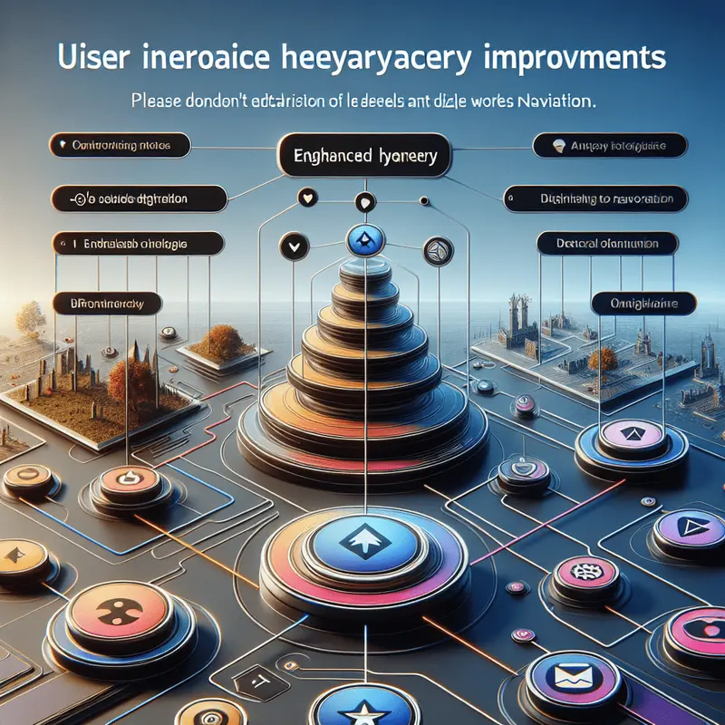
**Faixas de Hierarquia em Interfaces de Usuário: Melhorando a Hierarquia Visual e a Navegação**
Hierarchy Strips em Interfaces de Usuário: Aperfeiçoando a Hierarquia Visual A hierarquia visual é um aspecto crucial no design de interfaces de usuário (UI). Ela ajuda os usuários a compreenderem rapidamente a estrutura e os relacionamentos entre diferentes elementos em uma tela. Uma técnica…
Inteligência Artificial Vai Substituir Programadores?
“`html A inteligência artificial (IA) e o machine learning (ML) têm causado um impacto significativo em diversos setores, facilitando a automação de tarefas e a análise de grandes volumes de dados. Hoje, essas tecnologias são essenciais para empresas que desejam se manter competitivas em um mercado…
Empresas Abusam da IA sem Resolver Problemas Reais, Frustrando Clientes e Complicando Produtos
🔍 A febre da Inteligência Artificial está descontrolada. Em vez de criar soluções realmente úteis e focadas nas necessidades dos clientes, muitas empresas estão colocando “IA” em qualquer coisa, como se fosse um passe mágico para o sucesso. 🚀 IA no Pitch de Vendas? Um erro comum Sim, virou moda.…
Todo desenvolvedor deve aprender a se vender: você é sua própria marca e o código é seu produto.
Todo desenvolvedor deve estudar vendas. Não necessariamente para fins comerciais, mas para aprender a vender a si mesmo. Pense nisso: você é uma marca. Seu código é seu produto. Dominar a arte de vender a si mesmo pode trazer grandes benefícios, tais como: Mais dinheiro Mais ofertas Mais liberdade…
“Entenda o Poder das Hierarchy Strips para Melhorar a Experiência do Usuário em Interfaces Digitais”
Stripes de Hierarquia na Interface do Usuário As stripes de hierarquia são uma ferramenta poderosa no design de interfaces de usuário, permitindo que os designers dividam visualmente seu trabalho em grupos lógicos que se reforçam mutuamente em direção à ação desejada. Esta técnica é essencial para…
Perplexity AI introduzirá anúncios em busca assistida por IA no quarto trimestre de 2024
Prepare-se para anúncios em suas respostas de IA – Superpower Daily – 23 de agosto de 2024 Por Saeed Ezzati **Em parceria com** **No email de hoje:** Saias básicas sobre fotos capturando a realidade estão prestes a ir por água abaixo. Este fundador teve que treinar sua IA para não Rickrollar…
“7 Frases Pequenas, mas Poderosas, que Confortam e Acolhem em Momentos de Dificuldade”
As palavras têm um poder imenso sobre nossas emoções e nossa resiliência. Em tempos de adversidade, uma frase encorajadora pode ser a diferença entre se afundar em desespero e encontrar forças para seguir em frente. Pensando nisso, separei sete frases poderosas que funcionam como um abraço em…
Perplexity AI Anuncia Publicidade em Respostas de IA e Melhorias no GPT-4o para 2024
Prepare-se para anúncios nas respostas da sua IA – Poder Diário 2024-08-23 A Perplexity AI, uma startup de busca assistida por IA, planeja introduzir anúncios em sua plataforma no quarto trimestre deste ano, seguindo a tendência de integrar anúncios nas respostas da IA. Essa iniciativa visa…
Como Melhorar um Artigo Pessoal: Passos para Refinar sua Escrita e Torná-la Mais Impactante
Com o crescimento das lojas virtuais, muitos empreendedores estão em busca de maneiras eficazes de atrair e converter visitantes em clientes. O SEO (Search Engine Optimization) é uma ferramenta poderosa para alcançar esse objetivo. Neste artigo, vamos explorar estratégias avançadas de SEO que podem…
Tudo Que Você Precisa Saber: Programação para Iniciantes
“`html Entendendo a Programação: Uma Introdução Completa Você já se perguntou como os aplicativos que usamos diariamente são criados? A resposta é simples: através da programação! Mas o que é exatamente programação? É o processo de criar um conjunto de instruções que um computador pode seguir para…
“Cinco Passos Essenciais para se Tornar um Desenvolvedor Sênior e Dominar a Análise de Dados”
Se você está pronto para se tornar um desenvolvedor sênior, preste atenção nas seguintes sugestões: Desenvolva uma Forte Base em Ferramentas de Análise de Dados Um dos pilares para ascender na carreira de desenvolvedor é ter uma base sólida em ferramentas de análise de dados. Utilize ferramentas…
“Como Aprender Novas Coisas Rapidamente: Estratégias e Dicas Práticas”
Como Aprender Coisas Novas Rapidamente Aprender coisas novas pode parecer uma tarefa desafiadora, mas com algumas etapas claras e uma abordagem estruturada, é possível acelerar esse processo. Aqui estão seis passos que podem ajudar você a dominar novas habilidades de maneira eficaz. 1. Entenda o…
“Descubra as Raízes da Procrastinação e Como Superá-las para Alcançar Seus Objetivos”
Procrastinação muitas vezes é vista como uma falha pessoal, mas não é o inimigo; é um sintoma de questões mais profundas. Entender essas causas subjacentes pode nos ajudar a superar a procrastinação e alcançar nossos objetivos. 1. Falta de Metas Claras A procrastinação frequentemente surge da falta…
Procrastinação: Sintoma de Questões Mais Profundas, Não Inimiga da Produtividade
Procrastinação não é sua inimiga, é a causa A procrastinação é frequentemente vista como um problema que atrapalha a produtividade e a realização. No entanto, ela também pode ser um sintoma de questões mais profundas que precisam ser abordadas. Aqui estão alguns pontos-chave para considerar:…
Compreenda as Causas da Procrastinação para Superar Barreiras e Alcançar Suas Metas
A procrastinação é frequentemente vista como um impedimento para a produtividade, mas também pode ser um sintoma de problemas mais profundos. Compreender as causas raiz da procrastinação pode ajudá-lo a superá-la e alcançar seus objetivos. Aqui estão alguns pontos-chave a serem considerados: 1.…
Novidades da OpenAI: ChatGPT fala com voz clonada, novo gerador de imagens e câmera AI da Google Pixel 9
O mundo da tecnologia está em constante evolução, e a inteligência artificial (IA) é uma das áreas que mais tem avançado nos últimos tempos. As inovações não param de surgir, e entre as novidades mais interessantes está o fato de que a OpenAI desenvolveu um novo modo de voz para o ChatGPT,…
6 Maneiras Eficazes de Encontrar Ideias de Conteúdo Utilizando Dados e Ferramentas Analíticas
6 Maneiras de Encontrar Ideias de Conteúdo Produzir conteúdo relevante e atraente é crucial para o sucesso de qualquer estratégia de marketing digital. Muitas vezes, encontrar ideias novas pode ser desafiador, mas aqui estão seis maneiras efetivas de gerar ideias de conteúdo que realmente engajam…
Como Conseguir um Emprego Bem Pago como Desenvolvedor: Passos Essenciais para o Sucesso
Como Conseguir um Emprego de Alto Salário como Desenvolvedor: Passos Essenciais Buscar um emprego de alto salário como desenvolvedor pode parecer uma tarefa desafiadora, mas com uma abordagem estratégica e bem planejada, você pode aumentar significativamente suas chances de sucesso. Aqui estão…
Evite Quedas na Produtividade: Estratégias para Minimizar o Impacto das Interrupções no Trabalho
Qualquer pessoa que já esteve em um estado de fluxo produtivo e foi interrompida por uma “ligação rápida” conhece a sensação. Um momento você está totalmente concentrado, produzindo trabalho e se sentindo imbatível. No seguinte, você está em uma chamada que poderia ter sido um e-mail, e sua…
6 Maneiras de Encontrar Ideias de Conteúdo Inovadoras para Engajar Seu Público-Alvo
Quando se trata de gerar conteúdo de qualidade, a eficácia está em ter estratégias robustas e bem definidas. No artigo de hoje, vamos explorar 6 Maneiras de Vindicar Ideias de Conteúdo que vão transformar a maneira como você produz material para o seu blog ou site. Este guia é projetado para ser…
Os Recursos de Câmera AI do Google Pixel 9 Permitem Redefinir a Realidade: Saiba Mais
O #Google #Pixel 9 vem para redefinir a fotografia no universo dos smartphones com suas impressionantes funcionalidades de câmera baseadas em Inteligência Artificial (IA). Com recursos como Add Me, Reimagine, Autoframe, e Zoom Enhance, este novo dispositivo se destaca por permitir que até mesmo…
4 Maneiras que a IA Gerativa Revoluciona a Criação e Personalização de Conteúdos na Internet
A inteligência artificial gerativa (IA gerativa) está se tornando um dos pilares principais na transformação da internet e na maneira como interagimos com o mundo digital. Neste artigo, exploraremos 4 maneiras pelas quais a IA gerativa está revolucionando a internet, trazendo eficiência,…
ChatGPT usa voz clonada durante testes; Flux supera Midjourney como líder na geração de imagens por IA
ChatGPT fala com voz clonada de usuário: revolução ou pesadelo? 🤖 Em um teste recente, o ChatGPT começou inesperadamente a falar com a voz clonada de um usuário, gerando um misto de fascinação e preocupação. Esse evento abre um vasto leque de discussões sobre as aplicações e implicações éticas das…
Migração de Carreira para a Tecnologia: Descubra Oportunidades e Enfrente Desafios no Mercado em Crescimento
A migração de carreira para a tecnologia é um passo significativo para aqueles que desejam se adaptar às mudanças constantes no mercado de trabalho. Com o aumento do uso de tecnologia em diversas áreas, a demanda por profissionais qualificados na área de tecnologia é cada vez maior. Neste artigo,…
O Que Eu Preciso Saber Para Virar Programador?
“`html A jornada para se tornar um programador é repleta de desafios, aprendizados e, principalmente, conquistas. Neste artigo, vamos explorar as habilidades técnicas, as soft skills e algumas dicas valiosas para guiá-lo nessa trajetória. Se você está buscando um caminho para se tornar um…
Vale a Pena Virar Programador Agora?
A tecnologia está em constante evolução, e a demanda por desenvolvedores em diferentes setores está crescendo rapidamente. A indústria de tecnologia se expande para abordar novas áreas, como inteligência artificial, internet das coisas (IoT) e desenvolvimento de software para dispositivos móveis.…
**Interrupções por ligações rápidas podem destruir sua produtividade: dicas para minimizar o impacto**
Qualquer pessoa que já esteve no meio de um estado de fluxo produtivo e foi interrompida por uma “ligação rápida” conhece a sensação. Um momento você está no auge da produtividade, realizando tarefas e se sentindo imbatível. No momento seguinte, você está em uma chamada que poderia ter sido um…
10 Dicas Fundamentais para Melhorar Suas Habilidades como Desenvolvedor e Otimizar seu Trabalho em Equipe
Para se destacar como um desenvolvedor, é importante adotar diversas práticas que vão além do simples ato de codificar. A seguir, apresentamos 10 itens fundamentais que irão ajudá-lo a se tornar um desenvolvedor melhor: 1. Entender Problemas de Negócios Para ser eficaz, um desenvolvedor precisa…
Que Curso Devo Fazer?
Tomar a decisão de mudar de carreira é um marco significativo e, muitas vezes, pode ser assustador. No entanto, com a variedade de cursos disponíveis atualmente, essa transição pode ser suavizada com a preparação adequada. Desde cursos online, passando por opções presenciais, até bootcamps…
5 Itens Essenciais para se Tornar um Desenvolvedor Melhor: Dicas Práticas e Atualizações sobre AI
— ## 5 Itens para se Tornar um Melhor Desenvolvedor ### 1. **Aprenda a Usar Elementos HTML de Forma Eficaz** O HTML é a base do desenvolvimento web. Compreender e usar corretamente os elementos HTML pode tornar suas páginas mais acessíveis, amigáveis para SEO e mais fáceis de manter. Aqui estão…
ChatGPT atinge recorde de uso e receita com 110 milhões de downloads e quase $30 milhões em gastos dos usuários
O aplicativo móvel do ChatGPT acaba de registrar seu maior mês até agora, com um engajamento significativo dos usuários e um crescimento impressionante da receita. Desde o seu lançamento no iOS em maio de 2023 e no Android em julho de 2023, o app acumulou mais de 110 milhões de downloads combinados…
10 Dicas Essenciais para Melhorar sua Carreira como Desenvolvedor e Gestor de Sistemas
1. Domine a Sintaxe do PowerShell O PowerShell é uma ferramenta essencial para qualquer desenvolvedor que deseja automatizar tarefas e gerir sistemas de forma eficiente. Não basta conhecer apenas o básico; é importante dominar sua sintaxe e comandos avançados. Por exemplo, o comando…
10 Dicas Essenciais para Melhorar Suas Habilidades como Desenvolvedor
Se você deseja se destacar como desenvolvedor e melhorar continuamente suas habilidades, este guia apresentará 10 itens essenciais. Eles irão ajudar você a aprimorar a qualidade do seu código, torná-lo mais legível e eficiente. Vamos a eles: 1. Modelar uma Conta Modelar uma conta é um excelente…
10 Dicas de CSS para Melhorar Seus Layouts e se Tornar um Desenvolvedor Melhor
10 Ferramentas para Melhorar suas Habilidades como Desenvolvedor Se você está buscando formas de se tornar um desenvolvedor mais eficiente e habilidoso, há várias ferramentas e técnicas que podem ajudá-lo nessa jornada. Abaixo, listamos 10 itens essenciais que você deve considerar incorporar ao seu…
10 Dicas Essenciais para Você Melhorar como Desenvolvedor e Aperfeiçoar suas Habilidades
10 Itens para Você Se Tornar um Desenvolvedor Melhor 1. Entenda os Elementos HTML <main>: Define o conteúdo principal da página. <nav>: Representa uma seção de navegação. <section>: Representa uma seção genérica de conteúdo. <area>: Define uma região hot-spot em uma imagem. <audio>: Inclui conteúdo…
Substituindo ESLint e Prettier pelo Biome: Uma Solução Completa para Linting e Formatação de Código
Nos meus novos projetos, tenho substituído o ESLint e Prettier pelo Biome. Um dos grandes destaques do Biome é que ele já inclui muitas regras de plugins normalmente utilizados no ESLint, como typescript-eslint, eslint-plugin-react, eslint-plugin-react-hooks e muitos outros, removendo a necessidade…
“10 Dicas Essenciais para Melhorar suas Habilidades como Desenvolvedor de Software”
1. **Entenda a Estrutura de Dados** Compreender estruturas de dados é essencial para qualquer desenvolvedor. Estruturas como arrays, listas, pilhas, filas, árvores e grafos são fundamentais para organizar e gerenciar informações de maneira eficaz. O domínio dessas estruturas permite criar…
“10 Classes do Tailwind Que Você Gostaria de Ter Conhecido Antes”
O Tailwind CSS é uma estrutura de CSS poderosa e flexível, ideal para projetos de front-end que requerem desenvolvimento rápido e alta personalização. Aqui estão algumas classes do Tailwind que podem tornar seu processo de desenvolvimento mais eficiente e seus designs mais polidos: 1. bg-white Esta…
10 Dicas Cruciais para Desenvolvedores: Herramentas e Tendências de IA em 2023
Como se Tornar um Programador Melhor: 10 Dicas Essenciais 🧠 Pratique a Resolução de Problemas Algorítmicos Problemas algorítmicos são a espinha dorsal de muitos processos seletivos em grandes empresas de tecnologia. Sites como HackerRank e LeetCode oferecem uma vasta gama de exercícios para você…
10 passos para ser um desenvolvedor melhor: Novidades em IA e ferramentas essenciais
10 itens para você se tornar um desenvolvedor melhor 🧮 O DeepMind da Google afirma que sua IA pode resolver problemas da Olimpíada de Matemática 🔥 Stability AI entra em uma nova dimensão de IA com o Stable Video 4D 📊 Os assistentes de IA da Microsoft vão revolucionar o escritório — um dia 🧰10 novas…
DeepMind da Google Revela Avanços de IA em Problemas de Olimpíada de Matemática
🧠 Como a IA Revoluciona a Solução de Problemas Matemáticos Os sistemas de IA AlphaProof e AlphaGeometry 2, desenvolvidos pela DeepMind, alcançaram um avanço significativo na resolução de problemas matemáticos ao atingir um padrão de medalha de prata na Olimpíada Matemática Internacional (IMO) deste…
OpenAI lança SearchGPT, DeepMind soluciona problemas matemáticos e mais novidades sobre IA
Transforme Sua Estratégia de Marketing Digital com SEO Aprimorado No mundo digital atual, otimizar seu conteúdo para os mecanismos de busca é mais essencial do que nunca. SEO (Search Engine Optimization) de alta qualidade pode elevar seu site aos primeiros lugares dos resultados de busca, trazendo…
“10 Dicas Essenciais para Aprimorar suas Habilidades como Desenvolvedor”
Se você está buscando maneiras de se tornar um desenvolvedor melhor, existem várias áreas e ferramentas que podem aprimorar suas habilidades. Aqui estão 10 itens essenciais para você focar: 1. Aprenda a usar o Alteryx Designer O Alteryx Designer é uma ferramenta poderosa para análise de dados.…
15 Dicas Essenciais para Aperfeiçoar suas Habilidades de Desenvolvimento de Software
Entenda a Estrutura de Dados A estrutura de dados é a base de qualquer aplicação eficiente. Ao compreender como modelar dados complexos utilizando conjuntos como arrays, objetos e estruturas de dados hierárquicas, você garante o armazenamento e a recuperação eficiente de informações. Mergulhe…
Explorando a Arquitetura e Conceitos Fundamentais do React Fiber para Otimização de Performance
React Fiber é uma nova arquitetura introduzida pelo React para gerenciar o processo de renderização de forma mais eficiente. Ele visa melhorar o desempenho, especialmente em aplicações complexas. Aqui, vamos aprofundar nos conceitos-chave e na arquitetura do React Fiber. Arquitetura do React Fiber…
10 Itens Essenciais para Melhorar como Desenvolvedor: De Lógica de Programação a Ferramentas de Depuração
Se você está buscando maneiras de se tornar um desenvolvedor melhor, você veio ao lugar certo. Aqui estão 10 itens essenciais que irão aprimorar seu desenvolvimento e ampliar seu conhecimento, desde conceitos básicos até técnicas avançadas. 1. Entenda a Lógica de Programação A lógica de programação…
10 Itens Essenciais para se Tornar um Desenvolvedor Melhor e Mais Eficiente
Ser um desenvolvedor de sucesso exige dedicação contínua e investimento em várias habilidades. Para auxiliar tanto iniciantes quanto desenvolvedores experientes, compilei uma lista de 10 itens essenciais que ajudarão você a se tornar um desenvolvedor melhor. Essas habilidades são cruciais não…
Meta Lança Nova Ferramenta de IA para Competir com ChatGPT no Campo da IA Conversacional
Recentemente, a Meta lançou uma nova ferramenta de IA para competir com o ChatGPT no campo da inteligência artificial conversacional. Esta nova ferramenta foi projetada para aprimorar as capacidades da IA conversacional, tornando-a mais eficiente e eficaz em diversas aplicações. A expectativa é que…
10 Dicas Essenciais para Alavancar Sua Carreira como Desenvolvedor de Software
1. Aprenda a programar orientado a objetos A programação orientada a objetos (POO) é uma abordagem que organiza o código de maneira mais limpa e de fácil manutenção. Em vez de usar muitos ifs, substitua-os por conceitos da POO, como polimorfismo e herança, tornando o código mais legível e…
10 Dicas Fundamentais para Você se Tornar um Desenvolvedor Melhor
10 Itens para Você se Tornar um Desenvolvedor Melhor Se você deseja se destacar como desenvolvedor, é essencial continuamente aprimorar suas habilidades e conhecimentos. Aqui estão 10 itens que podem te ajudar a se tornar um desenvolvedor melhor: 1. Aprenda a Pensar em Termos de Sistemas Completos…
10 Dicas para Se Tornar um Desenvolvedor Melhor e Aumentar Suas Habilidades
Em um mercado cada vez mais competitivo, tornar-se um desenvolvedor de alta performance é essencial para garantir relevância e sucesso. A seguir, compartilhamos 10 itens fundamentais para você se tornar um desenvolvedor melhor. Leia cuidadosamente e aplique essas estratégias para elevar seu nível…
“5 Itens Essenciais para Melhorar sua Experiência de Desenvolvimento de Software”
5 Itens para Melhorar sua Experiência de Desenvolvimento 1. Entenda o Conceito de Programação Orientada a Objetos A programação orientada a objetos (POO) é uma abordagem que organiza o código em classes e objetos, facilitando a manutenção e a escalabilidade. Esta prática evita o uso excessivo de…
5 Elementos Essenciais para uma Apresentação Completa de UI que Vai Destacar Seu Trabalho
### 5 Elementos Essenciais para uma Apresentação de UI Abrangente Apresentar seu trabalho é crucial em cada estágio da sua carreira de design, seja ao trabalhar com desenvolvedores, clientes, partes interessadas ou simplesmente tentando fazer seu portfólio se destacar. Enquanto mostrar o design do…
Cinco Frases Pequenas e Eficazes Que Funcionam Como um Abraço em Momentos de Aflição
Quando nos sentimos sobrecarregados e estressados, é fácil sermos pegos por pensamentos e emoções negativas. Mas e se pudéssemos redirecionar nosso foco para algo mais positivo e inspirador? Pesquisas mostram que usar frases específicas pode ter um impacto profundo em nosso bem-estar mental. Aqui…
10 Maneiras de Superar a Procrastinação e Aumentar a Produtividade
A procrastinação é frequentemente mal compreendida como falta de motivação ou habilidades de gerenciamento de tempo. Contudo, é essencial reconhecer que a procrastinação é uma questão complexa com raízes mais profundas. Neste artigo, exploraremos as causas subjacentes da procrastinação e…
5 Formas Pelo Qual a IA Generativa Está Revolucionando a Internet
A IA generativa está transformando a internet de maneiras profundas, desde a forma como interagimos com os mecanismos de busca até o acesso a plataformas ricas em conteúdo. Aqui estão cinco aspectos chave dessa transformação: 1. Revolucionando a Experiência de Busca A IA generativa está preparada…
5 Lições para todo Desenvolvedor
Como desenvolvedores, muitas vezes focamos em dominar novas tecnologias e habilidades, mas tendemos a negligenciar a importância do crescimento pessoal e da autoconsciência. Neste artigo, exploraremos cinco lições de vida que podem ajudá-lo a se tornar um desenvolvedor melhor e um indivíduo mais…
5 Soft Skills Essenciais para Engenheiros de Front-end
No ambiente competitivo de desenvolvimento web, possuir habilidades técnicas é apenas uma parte da equação. Para ser um engenheiro de front-end de sucesso, é crucial desenvolver e aprimorar habilidades interpessoais, ou soft skills. Essas habilidades são fundamentais para melhorar a comunicação, a…
6 Estratégias para Impulsionar Sua Criação de Conteúdo
Escrever conteúdo envolvente para o seu público é crucial. Encontrar um tópico que ressoe com eles pode ser desafiador. Este artigo explorará seis estratégias para ajudá-lo a desenvolver novas ideias de conteúdo e estimular sua criatividade como criador de conteúdo. 1. Realize Pesquisas e Analise…
A Importância de uma Prática Eficaz de Revisão de Código
Revisar código não é apenas uma etapa técnica no desenvolvimento de software, mas também um componente crucial para manter a qualidade do código e promover uma cultura de colaboração ágil. Neste artigo, vamos explorar como uma prática eficaz de revisão de código pode ser implementada para maximizar…
As 5 Funcionalidades de JavaScript Mais Transformativas Introduzidas pelo ES9
O JavaScript passou por mudanças significativas na última década, com cada versão introduzindo novas funcionalidades. No entanto, o ECMAScript 2018 (ES9) trouxe algumas das mudanças mais transformadoras. Neste artigo, exploraremos as 5 funcionalidades mais impactantes introduzidas pelo ES9. 1.…
Como Construir um Painel Administrativo com React
Painéis administrativos são essenciais para diversos tipos de aplicações, permitindo a administração e visualização de dados de forma intuitiva. Neste post, vamos aprender a construir um painel administrativo utilizando React, uma das bibliotecas JavaScript mais populares atualmente. Configurando o…

Dicas de javascript para dar um boost em seus projetos
Utilizando Object.values() para Iteração Eficiente de Objetos Iterar sobre os valores de um objeto pode ser uma tarefa tediosa. Use Object.values() para simplificar esse processo. Por exemplo, considere o seguinte código: const person = { name: ‘John’, age: 30, occupation: ‘Developer’ }; const…
Ferramentas que te ajudam a se tornar um DEV mais eficiente
Se você está se preparando para uma entrevista de desenvolvedor sênior em JavaScript ou apenas quer testar seus conhecimentos, este artigo é para você. Vamos explorar algumas das perguntas mais avançadas, cobrindo desde conceitos orientados a objetos até o loop de eventos, com exemplos de código…
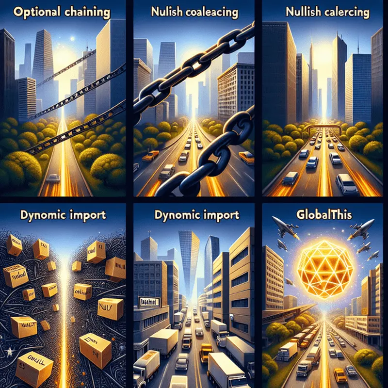
Melhores Features do ES9 JavaScript
O ECMAScript 2018, também conhecido como ES9, introduziu algumas funcionalidades importantes e úteis que podem facilitar o desenvolvimento em JavaScript. Neste post, vamos explorar as principais features do ES9 e como elas podem ser aplicadas. Rest/Spread Properties As propriedades rest e spread…
O que é TLS/SSL e HTTPS?
Nos dias atuais, com a crescente disseminação de informações através da internet, a segurança se tornou uma preocupação primordial. Termos como TLS, SSL e HTTPS são frequentemente mencionados quando o assunto é a proteção de dados pessoais e confidenciais. Mas afinal, o que realmente significam…
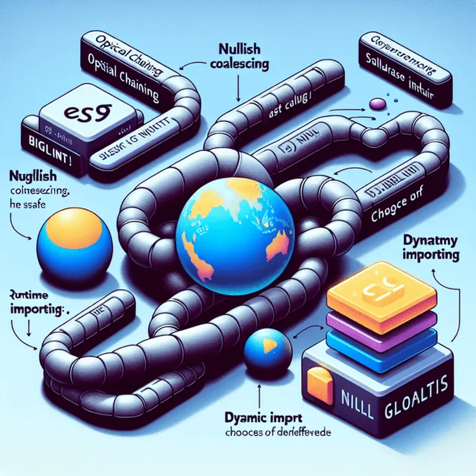
Use If Else Pelo AMOR DE DEUS
Quando se trata de programar, todo mundotem suas preferências. Algumas pessoas adoram programar de forma concisa e eficiente, enquanto outras preferem um código mais explícito e facilmente compreensível. No entanto, há uma prática de programação que mexe com a minha sanidade, e sinceramente espero…
Perguntas Avançadas de Entrevista em JavaScript para Desenvolvedores Sênior
Se você está se preparando para uma entrevista de desenvolvedor sênior em JavaScript ou apenas quer testar seus conhecimentos, este artigo é para você. Vamos explorar algumas das perguntas mais avançadas, cobrindo desde conceitos orientados a objetos até o loop de eventos, com exemplos de código…
Torne-se um Dev Frontend mais eficiente
Para transformar-se em um desenvolvedor front-end mais eficiente, é essencial conhecer as ferramentas adequadas para otimizar o fluxo de trabalho e melhorar a qualidade do código. Neste artigo, exploraremos 10 ferramentas para desenvolvimento front-end que são cruciais para qualquer programador…